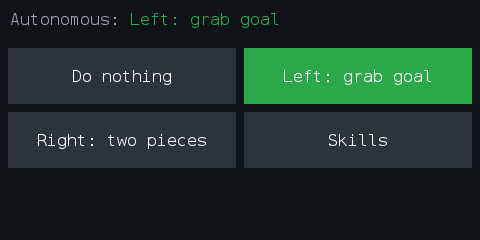

Java for VEX V5 · runs on Hydrozoa
Program your VEX robot the way FRC teams program theirs.
Subsystems, commands, triggers, odometry and path following, with the same names WPILib uses. Write a drivetrain like a SPARK MAX tank drive, draw autos in a path planner, and test it all in a simulator before it touches a field tile.
private final VexMotor m_leftLeader = new VexMotor(1, Cartridge.BLUE);
private final VexMotor m_leftFollower = new VexMotor(2, Cartridge.BLUE);
private final DifferentialDrive m_drive =
new DifferentialDrive(m_leftLeader, m_rightLeader);
public DriveSubsystem() {
VexMotorConfig config = new VexMotorConfig();
config.idleMode(IdleMode.kBrake).smartCurrentLimit(2.5);
config.encoder.positionConversionFactor(kMetersPerRotation);
m_leftLeader.configure(config);
m_leftFollower.configure(
new VexMotorConfig().apply(config).follow(m_leftLeader));
}
public Command driveDistanceCommand(double meters) {
return new DriveDistance(this, meters);
}private final SparkMax m_leftLeader = new SparkMax(1, MotorType.kBrushless);
private final SparkMax m_leftFollower = new SparkMax(2, MotorType.kBrushless);
private final DifferentialDrive m_drive =
new DifferentialDrive(m_leftLeader, m_rightLeader);
public DriveSubsystem() {
SparkMaxConfig config = new SparkMaxConfig();
config.idleMode(IdleMode.kBrake).smartCurrentLimit(50);
config.encoder.positionConversionFactor(kMetersPerRotation);
m_leftLeader.configure(config, ResetMode.kResetSafeParameters,
PersistMode.kPersistParameters);
m_leftFollower.configure(new SparkMaxConfig().apply(config).follow(m_leftLeader),
ResetMode.kResetSafeParameters, PersistMode.kPersistParameters);
}What's here
Guides
28 pages, from installing the tools to vision and autonomous: commands, triggers, motors, sensors, pneumatics, PID and profiles, odometry, the simulator and testing. Every code sample is compiled.
Read the guides →Path planner
Draw curved paths on the V5RC field, add event markers and slow zones, build autos, preview them, and export Java your robot follows.
Open the planner →Dashboard
Live telemetry from the brain over USB, or a replay of a simulator run: graphs, values, and the robot on the field.
Open the dashboard →API reference
Every public class and method, generated from the source: the library, plus the template robot and the Clawbot example.
Browse the API →Status. Everything compiles against Hydrozoa's real SDK source, is covered by unit tests, and runs in the desktop simulator, including path following. It has not yet been run on a physical V5 brain, and Hydrozoa itself is experimental, so expect rough edges on hardware.
Start
Getting started
From nothing to a robot program running on a V5 brain: install three tools, create a project, check it in the simulator, upload it.
A Java library that brings FRC's command-based programming to VEX V5: Robot, RobotContainer, subsystems, commands, triggers, odometry and path following, with WPILib's names. It runs on the brain through Hydrozoa, which turns Java into WebAssembly. If you've written an FRC robot, most of this will look familiar; Coming from FRC lists the differences.
What you need
| Tool | Why | Get it |
|---|---|---|
| JDK 21 | Compiles your code (Hydrozoa needs Java 21) | Eclipse Temurin 21 |
| VS Code | Editor, with the VEX Command-Based extension | code.visualstudio.com, then the extension and the Extension Pack for Java |
| Hydrozoa CLI | Uploads programs to the brain over USB | Install Rust, then run the command below |
cargo install --git https://github.com/vexide/hydrozoa-cli.gitYou don't need to install Gradle: every project has a Gradle wrapper (gradlew) that downloads the right version the first time. That first build needs internet; after that it works offline.
Create a project
In VS Code (recommended): open the Command Palette (Ctrl+Shift+P), run VEX: Create a New Project, and answer four questions:
- Start from: the command-based template (a 6-motor tank drive with an intake, ready for your robot) or the V5 Clawbot (a complete example robot).
- Where: the folder the project goes in.
- Name: e.g.
Team1234Bot. It's the folder name and the name on the brain's screen. - Package: your Java package, e.g.
com.team1234.robot.
Without VS Code: clone the repository and work in its template/ folder. It's the same code; it uses the library from source instead of as a vendor library.
git clone https://github.com/kedrickjohnson/vex-command-template.git
cd vex-command-templateWhat's in a project
| File | What it's for |
|---|---|
Main.java | Starts the program. You won't edit it. |
Robot.java | The robot's lifecycle: runs the scheduler, starts the auto. Like FRC's Robot.java. |
RobotContainer.java | Creates subsystems, binds buttons, lists the autos. Where most of your setup goes. |
Constants.java | Ports, gear ratios, gains. Change these to match your robot. |
subsystems/ | One class per mechanism: drive, intake, arm… |
commands/ | Command classes (most commands are short factory methods in subsystems instead). |
autos/ | Autonomous routines, including ones exported from the path planner. |
src/sim/java/…/SimMain.java | Runs the robot code in the simulator. |
vendordeps/VexLib.json | The library, installed like an FRC vendordep (details). |
Run it in the simulator
Click Simulate in VS Code's status bar, or run:
./gradlew simulateThe simulator runs your real robot code against simulated motors and sensors, faster than real time. The template's script waits 3 seconds while the Inertial Sensor "calibrates", runs the autonomous for 15 seconds, then drives for a few seconds of driver control, printing the robot's position once a second. You should see Auto done. Add --args=log to also write a log you can replay on the dashboard.
Run it on a robot
- Wire the robot to match
Constants.java, or change the ports inConstants.javato match your robot. At minimum check the drive motor ports, which way each motor spins (k…Reversed), the cartridge color, and the Inertial Sensor port. - Plug the brain (or a controller tethered to it) into your computer with USB.
- Click Upload in VS Code, or run
./gradlew hydrozoaUpload. The program lands in slot 1 (set inbuild.gradle.kts). - Run it from the brain's screen. Keep the robot still for the first two seconds while the Inertial Sensor calibrates.
Everything compiles against Hydrozoa's SDK and runs in the simulator, but the library hasn't been run on a physical brain yet, and Hydrozoa itself is experimental. If something misbehaves on hardware, check Deploying & troubleshooting and report what you see.
Make it your robot
Start
Coming from FRC
The names and patterns are WPILib's. What changes is the hardware underneath: smart motors on a brain instead of CAN controllers on a roboRIO, no Driver Station, and a much smaller CPU.
Class by class
| FRC / WPILib | Here | Notes |
|---|---|---|
TimedRobot | VexRobot | Same lifecycle methods; 10 ms loop. |
Command, Commands, SubsystemBase, Trigger, CommandScheduler | Same names | Same decorators: withTimeout, until, andThen, alongWith, repeatedly, unless… |
CommandXboxController | VexController | new VexController(0) primary, (1) partner. Stick up is positive. |
RobotModeTriggers | Same name | autonomous(), teleop(), disabled(). |
SparkMax + SparkMaxConfig | VexMotor + VexMotorConfig | Same config style; no persist/reset modes. |
RelativeEncoder | VexEncoder | From motor.getEncoder(); conversion factors in the config. |
CANcoder, Through Bore | VexRotationSensor | Absolute angle, kept through power cycles. |
Pigeon2, AHRS | VexInertial | getAngle() clockwise, getRotation2d() counter-clockwise. |
DigitalInput, Solenoid, DoubleSolenoid, AnalogPotentiometer, Encoder | Same names (AdiEncoder for Encoder) | On 3-wire ports 'A'–'H'. DigitalInput.get() is true when pressed. |
PhotonCamera + PhotonPoseEstimator | VexGps + GpsPoseEstimator | Same Vision subsystem pattern and a robotToGps Transform2d from robot center; see Vision. |
DifferentialDrive, DifferentialDriveOdometry, DifferentialDrivePoseEstimator | Same names | Odometry takes the gyro angle and wheel distances. |
PIDController, ProfiledPIDController, TrapezoidProfile | Same names | |
SimpleMotorFeedforward, ArmFeedforward, ElevatorFeedforward | Same names | |
SlewRateLimiter, Debouncer, LinearFilter, MedianFilter | Same names | |
Pose2d, Rotation2d, Translation2d, Transform2d, Twist2d | Same names | 2D only. |
Units | Same name | Plus tiles, millimeters, millivolts, milliamps. |
SendableChooser<Command> | AutoSelector | A touch menu on the brain's screen. |
SmartDashboard | Telemetry + the dashboard | Over USB serial. |
RobotController, Timer | Same names | Timer.getFPGATimestamp() is seconds since start. |
PathPlanner AutoBuilder, NamedCommands | Same names | Paths come from the path planner here. |
| Vendordeps | Vendordeps | Same JSON idea; see Vendor libraries. |
Things that are different
Sticks: up is positive
FRC joysticks report negative when pushed forward, so FRC code writes -controller.getLeftY(). The V5 controller reports positive, so here it's just controller.getLeftY(). Copying FRC drive code? Remove the minus signs on Y axes.
No Driver Station
The robot's mode comes from field control (or a competition switch): disabled, autonomous, then driver control (WPILib's "teleop"). With nothing plugged in, a V5 program runs straight into driver control. There's no dashboard to pick the auto from, so it's picked on the brain's screen with an AutoSelector.
Motors are smart, and there's no CAN bus
Each V5 motor plugs into its own smart port (1–21) and has its own encoder, current limit and position control built in. "Follower" motors are done in software: the leader copies its command to them each time you set it. The motor's built-in encoder counts after the gear cartridge, so tell VexMotor which cartridge is installed.
Current is limited, and shared
A V5 motor tops out at 2.5 A. With more than 8 motors, VEXos lowers every motor's limit so the battery isn't overloaded, which is why capping motors that don't need full current (a claw, an intake) helps the drive.
The brain is slow
Hydrozoa runs your Java as interpreted WebAssembly on a small ARM processor. Keep each loop light: avoid creating objects every loop, don't redraw the screen every loop, and prefer the motor's built-in position control over a fast software PID where it's good enough.
Field coordinates
The origin is the center of the field (like the GPS Sensor and FTC), not a corner. Meters, heading counter-clockwise from +X, like WPILib. See Units & field coordinates.
Pneumatics
No PCM or PH: solenoid valves plug into 3-wire ports, and air comes from a pre-charged tank (no compressor on the robot), so you have a limited number of actuations per match.
Start
VS Code extension
Create a robot project, build, simulate and upload it, and add subsystems, commands and autos without leaving the editor.
Install it
- Get
vex-command-based-0.1.0.vsix(build it fromvscode-extension/in this repository, see below). - In VS Code open Extensions, click … at the top of the panel, choose Install from VSIX… and pick the file.
- Also install the Extension Pack for Java for code completion, and JDK 21.
Create a project
Open the Command Palette (Ctrl+Shift+P) and run VEX: Create a New Project. It asks four things:
| Question | Example |
|---|---|
| Start from | Command-based template (6-motor tank drive, intake, planner autos) or V5 Clawbot |
| Where | The folder the project goes in |
| Name | Team1234Bot: the folder name and the name on the brain's screen |
| Package | com.team1234.robot |
The result is a standalone Gradle project: your robot code in src/main/java/ under your package, the simulator in src/sim/java/, and VexLib installed as a vendor library in vendordeps/VexLib.json, the way an FRC project lists REV or CTRE. The library's classes are in the com.robojacks.lib package, so imports match these guides.
Build, simulate, upload
With a robot project open, the status bar shows four buttons:
| Button | Runs |
|---|---|
| Robot name · slot | Picks the robot program, when the folder has more than one (this repository has two) |
| Build | gradlew assemble |
| Simulate | gradlew simulate: see Simulator |
| Upload | gradlew hydrozoaUpload; Ctrl+Shift+U in a Java file |
Upload needs the Hydrozoa CLI. If it isn't installed, the extension says so and can run the install command in a terminal for you. VEX: Simulate Tuning Tests runs the simulator with --args=tune. Compile errors appear in the Problems panel.
These are also tasks of type vex, so they work from Terminal → Run Task and in tasks.json:
{ "type": "vex", "task": "upload", "robot": ":examples:clawbot" }Leave out robot in a project the extension created; it has one robot.
Vendor libraries
VEX: Manage Vendor Libraries installs, updates and removes libraries, like WPILib's vendor dependency manager. See Vendor libraries.
New subsystems, commands and autos
Right-click a folder under src/main/java and open the VEX menu:
| Wizard | Writes |
|---|---|
| New Subsystem | A SubsystemBase with periodic() and an example command factory. |
| New Subsystem with a Motor | Asks for the port, cartridge and idle mode. Writes a one-motor subsystem configured with VexMotorConfig, with forward and reverse commands, and adds <Name>Constants to your Constants.java. |
| New Command | A Command class with initialize, execute, end and isFinished. Lists your subsystems so it can call addRequirements. |
| New Auto | A static factory built from AutoBuilder steps, ready to return from RobotContainer.getAutonomousCommand(). |
The package comes from the folder you clicked. Snippets: type vexbind, vexstartend, vexrunonce, vexnamed, vexmotorconfig or vexsequence in a Java file.
Building the extension
cd vscode-extension
node scripts/bundle.js # packs the published VexLib, template/ and examples/clawbot/
node test/run.js # tests
npx @vscode/vsce package # makes the .vsixRun the bundle step after publishing a new VexLib or changing the templates. Existing projects pick up a new VexLib through Check for updates.
Start
Vendor libraries
VexLib is delivered the way FRC teams get REVLib or Phoenix: a JSON file in vendordeps/ that points at a Maven repository.
How it works
Each library is one file in your project's vendordeps/ folder. The build reads every .json there, adds its Maven repositories, and adds its Java artifacts as dependencies. Gradle downloads them on the next build, along with sources so VS Code can show the library's docs and jump into its code.
{
"fileName": "VexLib.json",
"name": "VexLib",
"version": "0.1.0",
"uuid": "d6eb81fc-0c7e-4aa7-8b70-7d890ccc2d6e",
"hydrozoaVersion": "0.1.0-alpha.1",
"mavenUrls": ["https://kedrickjohnson.github.io/vex-command-template/maven"],
"jsonUrl": "https://kedrickjohnson.github.io/vex-command-template/vendordeps/VexLib.json",
"javaDependencies": [
{ "groupId": "io.github.kedrickjohnson", "artifactId": "vexlib", "version": "0.1.0" }
]
}The format is WPILib's, trimmed to what a Java-only VEX robot needs: no native libraries and no FRC year. uuid stays the same across versions so an update replaces the old file, and jsonUrl is where updates are checked.
Installing
| How | Steps |
|---|---|
| VS Code | VEX: Manage Vendor Libraries → Install new library (online), then paste the library's JSON URL. VexLib also comes with the extension and installs offline. |
| By hand | Download the JSON into vendordeps/ and build. |
VexLib's URL: https://kedrickjohnson.github.io/vex-command-template/vendordeps/VexLib.json
The extension copies its bundled VexLib into ~/.vex-command/maven, a local repository every project checks first. That's what lets a new project build at a competition with no internet, the same idea as WPILib's offline vendordep folder.
The build code
Projects made by the extension already have this in build.gradle.kts. To add vendor libraries to an older project, paste it above the hydrozoa { } block, or let the manager add it.
// ---- Vendor libraries -------------------------------------------------------------------
// Like FRC: every vendordeps/*.json adds its Maven repositories and Java dependencies.
// Manage them with "VEX: Manage Vendor Libraries" in VS Code, or edit the folder by hand.
@Suppress("UNCHECKED_CAST")
val vendordeps: List<Map<String, Any?>> = fileTree("vendordeps") { include("*.json") }
.files.sortedBy { it.name }
.map { groovy.json.JsonSlurper().parse(it) as Map<String, Any?> }
repositories {
// Offline copies installed by the VS Code extension, checked first.
maven { url = uri(File(System.getProperty("user.home"), ".vex-command/maven")) }
mavenCentral()
vendordeps.flatMap { (it["mavenUrls"] as? List<*>).orEmpty() }.distinct().forEach { u ->
maven { url = uri(u.toString()) }
}
}
dependencies {
vendordeps.forEach { vendordep ->
(vendordep["javaDependencies"] as? List<*>).orEmpty().forEach {
val d = it as Map<*, *>
implementation("${d["groupId"]}:${d["artifactId"]}:${d["version"]}")
}
}
}Publishing a library
A vendor library is a Maven repository plus the JSON. GitHub Pages can host both. For VexLib, the version lives in gradle.properties:
- Change
vexlibVersioningradle.properties. - Run
./gradlew :vexlib:publish. It writes the jars and pom todocs/maven/and the JSON todocs/vendordeps/VexLib.json. (Without Gradle:python3 tools/release_vexlib.py --classpath <hydrozoa jar>does the same.) - Commit and push. GitHub Pages serves the new version, and teams see it under Check for updates.
- Run
node scripts/bundle.jsinvscode-extension/and package the extension so new projects start on that version.
Old versions stay in docs/maven/, so a team that hasn't updated keeps building.
Concepts
The robot program
A robot program is four files and a loop. Main starts it, Robot handles the match phases, RobotContainer wires everything up, and the command scheduler runs the commands every 10 ms.
Main: starting up
package com.robojacks.robot;
import com.robojacks.lib.hal.hydrozoa.HydrozoaRuntime;
/** Brain entry point (set as the Hydrozoa entrypoint in build.gradle.kts). */
public final class Main {
private Main() {}
public static void main(String[] args) {
HydrozoaRuntime.start(Robot::new);
}
}HydrozoaRuntime.start connects the library to the real brain, creates your Robot, and runs its loop forever. The simulator's SimMain does the same with simulated hardware instead. That swap is the whole trick: robot code only talks to the library, never to Hydrozoa directly, so the same code runs in both places.
Robot: the match phases
Robot extends VexRobot, the VEX version of WPILib's TimedRobot. The method names are the same:
package com.robojacks.robot;
import com.robojacks.lib.command.Command;
import com.robojacks.lib.command.CommandScheduler;
import com.robojacks.lib.robot.VexRobot;
import com.robojacks.lib.telemetry.Telemetry;
/** Almost line-for-line the FRC command-based Robot.java. */
public class Robot extends VexRobot {
private RobotContainer container;
private Command autonomousCommand;
@Override
public void robotInit() {
container = new RobotContainer();
}
@Override
public void robotPeriodic() {
CommandScheduler.getInstance().run();
Telemetry.flush();
}
@Override
public void autonomousInit() {
autonomousCommand = container.getAutonomousCommand();
if (autonomousCommand != null) {
autonomousCommand.schedule();
}
}
@Override
public void teleopInit() {
if (autonomousCommand != null) {
autonomousCommand.cancel();
}
}
public RobotContainer getContainer() {
return container;
}
}| Method | Runs |
|---|---|
robotInit() | Once, at startup. Build the RobotContainer here. |
robotPeriodic() | Every loop, in every mode. Runs the scheduler. |
disabledInit() / disabledPeriodic() / disabledExit() | Before the match and between phases. |
autonomousInit() / autonomousPeriodic() / autonomousExit() | The 15-second autonomous (or the skills run). The template schedules the chosen auto in autonomousInit. |
teleopInit() / teleopPeriodic() / teleopExit() | Driver control. The template cancels the auto in teleopInit. |
The mode comes from field control or a competition switch. With neither plugged in, VEXos runs the program straight into driver control, which is how you practice.
The loop
Every 10 ms (VexRobot.kDefaultPeriod), in this order:
- If the mode changed, the old mode's
…Exit()and the new mode's…Init()run. - The current mode's
…Periodic()runs. robotPeriodic()runs, which callsCommandScheduler.getInstance().run(): every subsystem'speriodic(), then every trigger binding is checked, then every scheduled command'sexecute()(andend()for those that finished).- The hardware layer does housekeeping (sending queued controller-screen text).
If a loop takes longer than 10 ms, the next one starts right away rather than trying to catch up. Keep loops light: Performance has tips.
RobotContainer: wiring it up
Like in FRC, Robot stays short and the setup lives in RobotContainer: subsystems as fields, controller bindings, default commands, and the autos.
package com.robojacks.robot;
import com.robojacks.lib.auto.AutoSelector;
import com.robojacks.lib.auto.NamedCommands;
import com.robojacks.lib.command.Command;
import com.robojacks.lib.command.Commands;
import com.robojacks.lib.command.RobotModeTriggers;
import com.robojacks.lib.drive.TuningCommands;
import com.robojacks.lib.input.VexController;
import com.robojacks.lib.math.MathUtil;
import com.robojacks.robot.autos.Autos;
import com.robojacks.robot.autos.PlannerAutos;
import com.robojacks.robot.commands.TankDrive;
import com.robojacks.robot.subsystems.DriveSubsystem;
import com.robojacks.robot.subsystems.Intake;
import com.robojacks.robot.subsystems.Vision;
import static com.robojacks.robot.Constants.OIConstants.kDriveDeadband;
/**
* Where the robot is set up: subsystems, controller bindings and the auto.
*
* <pre>
* Left stick up/down left side
* Right stick up/down right side
* L2 (hold) half speed
* R1 / R2 (hold) intake / outtake
* D-pad turn to field heading (up 0, left 90, down 180, right -90)
* D-pad left/right (while disabled) choose the auto; also tap it on the brain screen
* </pre>
*/
public class RobotContainer {
// The robot's subsystems
private final DriveSubsystem m_robotDrive = new DriveSubsystem();
private final Intake m_intake = new Intake();
// Vision: the GPS sends pose estimates to the drive, like a PhotonVision camera. Only if there is one.
private final Vision m_vision = Constants.VisionConstants.kGpsPort > 0
? new Vision(m_robotDrive::addVisionMeasurement) : null;
// The driver's controller
private final VexController m_driverController = new VexController(0);
// Auto chooser on the brain's screen (VEX's SendableChooser)
private final AutoSelector m_autoSelector = new AutoSelector();
public RobotContainer() {
// Commands autos can use by name (path planner markers). Register before building autos.
NamedCommands.register("intake", m_intake::intakeCommand);
NamedCommands.register("outtake", m_intake::outtakeCommand);
// Default command: tank drive. VEX sticks are already positive when pushed up.
m_robotDrive.setDefaultCommand(new TankDrive(
m_robotDrive,
() -> MathUtil.applyDeadband(m_driverController.getLeftY(), kDriveDeadband),
() -> MathUtil.applyDeadband(m_driverController.getRightY(), kDriveDeadband)));
// Autos to choose from. Build them after registering named commands.
m_autoSelector.setDefaultOption("Example auto", Autos.exampleAuto(m_robotDrive, m_intake));
m_autoSelector.addOption("Planner auto", PlannerAutos.exampleAuto(m_robotDrive));
m_autoSelector.addOption("Do nothing", Autos.doNothing());
m_autoSelector.addControllerBindings(m_driverController);
if (Constants.kTuningMode) {
configureTuningBindings();
} else {
configureButtonBindings();
}
}
private void configureButtonBindings() {
// Drive at half speed while L2 is held
m_driverController.l2().whileTrue(Commands.startEnd(
() -> m_robotDrive.setMaxOutput(0.5), () -> m_robotDrive.setMaxOutput(1.0)));
m_driverController.r1().whileTrue(m_intake.intakeCommand());
m_driverController.r2().whileTrue(m_intake.outtakeCommand());
// Snap to field headings (handy for testing odometry and the turn PID)
m_driverController.up().onTrue(m_robotDrive.turnToAngleCommand(0));
m_driverController.left().onTrue(m_robotDrive.turnToAngleCommand(90));
m_driverController.down().onTrue(m_robotDrive.turnToAngleCommand(180));
m_driverController.right().onTrue(m_robotDrive.turnToAngleCommand(-90));
// Buzz the driver when driver control starts
RobotModeTriggers.teleop().onTrue(m_driverController.rumbleCommand("-"));
}
/** Press a button to start a test. L1 aborts it and hands control back to the sticks. */
private void configureTuningBindings() {
m_driverController.a().onTrue(TuningCommands.characterize(m_robotDrive));
m_driverController.b().onTrue(TuningCommands.autoTuneTurn(m_robotDrive));
m_driverController.x().onTrue(TuningCommands.driveDistanceTest(m_robotDrive, 1.0));
m_driverController.y().onTrue(TuningCommands.turnTest(m_robotDrive));
m_driverController.l1().onTrue(m_robotDrive.stopCommand());
}
public Command getAutonomousCommand() {
return m_autoSelector.getSelected();
}
public AutoSelector getAutoSelector() {
return m_autoSelector;
}
public DriveSubsystem getDriveSubsystem() {
return m_robotDrive;
}
}Constants
Every number that describes your robot (ports, motor directions, gear ratios, gains) goes in Constants.java, grouped in nested classes, with FRC's k prefix. Subsystems import static their group so the code reads cleanly:
import static com.robojacks.robot.Constants.DriveConstants.*;
private final VexMotor m_leftLeader = new VexMotor(kLeftFrontMotorPort, kCartridge);Convert measurements once, here, with Units: kWheelDiameterMeters = Units.inchesToMeters(kWheelDiameterInches).
Disabled means stopped
When the robot is disabled, the scheduler cancels every command that doesn't say it can run while disabled, and motors stop. A command that should run while disabled (updating a display, picking the auto) uses .ignoringDisable(true).
Concepts
Commands
A command is one action the robot takes over time: drive to a point, run the intake until a piece arrives, hold the arm up. Commands are scheduled, run every loop, and end; the scheduler makes sure two commands never fight over the same subsystem.
The lifecycle
| Method | When |
|---|---|
initialize() | Once, when the command is scheduled. Reset timers and controllers here. |
execute() | Every loop while it runs. |
isFinished() | Checked after each execute(). Return true to end. false forever means "until interrupted". |
end(boolean interrupted) | Once, at the end. interrupted is true if it was cancelled or another command took its subsystem. Stop motors here. |
Commands as classes
For anything with state or more than a few lines, write a class. The template's driver-control command:
package com.robojacks.robot.commands;
import com.robojacks.lib.command.Command;
import com.robojacks.robot.subsystems.DriveSubsystem;
import java.util.function.DoubleSupplier;
/**
* Drives the robot with tank controls: left stick runs the left side, right stick the right.
* This is the drivetrain's default command.
*/
public class TankDrive extends Command {
private final DriveSubsystem m_drive;
private final DoubleSupplier m_left;
private final DoubleSupplier m_right;
/**
* @param drive the drive subsystem
* @param left left side speed, -1..1
* @param right right side speed, -1..1
*/
public TankDrive(DriveSubsystem drive, DoubleSupplier left, DoubleSupplier right) {
m_drive = drive;
m_left = left;
m_right = right;
addRequirements(m_drive);
setName("TankDrive");
}
@Override
public void execute() {
m_drive.tankDrive(m_left.getAsDouble(), m_right.getAsDouble());
}
@Override
public void end(boolean interrupted) {
m_drive.stop();
}
}addRequirements(subsystem) declares which subsystems the command uses. It's how the scheduler knows that a new drive command must replace the running one.
In VS Code, right-click a folder and choose VEX → New Command to get this skeleton with the subsystem filled in.
Commands as factories
Most commands are short, so FRC style is to build them from the subsystem's helper methods, which add the requirement for you:
| Factory (on a subsystem) | Command that… |
|---|---|
runOnce(action) | Does one thing and ends. |
run(action) | Does something every loop until interrupted. |
startEnd(start, end) | Does start, waits until interrupted, then end. Perfect with whileTrue. |
runEnd(run, end) | run every loop, end when interrupted. |
startRun(start, run) | start once, then run every loop. |
defer(supplier) | Builds the real command when scheduled (for commands that depend on the robot's state at that moment). |
idle() | Holds the subsystem and does nothing. |
An intake written this way:
/** A roller intake with a distance sensor that sees a game piece and a color sensor that reads it. */
public class ExampleIntake extends SubsystemBase {
private final VexMotor m_motor = new VexMotor(kMotorPort, kCartridge);
private final VexDistanceSensor m_pieceSensor = new VexDistanceSensor(kDistancePort);
private final VexOpticalSensor m_colorSensor = new VexOpticalSensor(kOpticalPort);
/** True while a game piece is in the intake. Use it to trigger commands. */
public final Trigger hasPiece = new Trigger(this::hasPiece).debounce(0.05);
public ExampleIntake() {
super("Intake");
VexMotorConfig config = new VexMotorConfig();
config.idleMode(IdleMode.kCoast).smartCurrentLimit(2.0);
m_motor.configure(config);
m_colorSensor.setLedPower(1.0); // consistent color readings under any field lighting
}
@Override
public void periodic() {
Telemetry.put("intake/hasPiece", hasPiece());
Telemetry.put("intake/hue", m_colorSensor.getHue());
}
public boolean hasPiece() {
return m_pieceSensor.isWithin(kPieceDistanceMeters);
}
public boolean pieceIsRed() {
return m_colorSensor.isColor(VexOpticalSensor.kRedHue, 25);
}
/** Runs the rollers in until a piece arrives (or the command is interrupted). */
public Command intakeCommand() {
return startEnd(() -> m_motor.setVoltage(kIntakeVolts), m_motor::stopMotor)
.until(this::hasPiece)
.withName("Intake");
}
/** Spits the piece out for half a second. */
public Command ejectCommand() {
return startEnd(() -> m_motor.setVoltage(-kIntakeVolts), m_motor::stopMotor)
.withTimeout(0.5)
.withName("Eject");
}
}The static Commands class has the same factories without a subsystem (pass requirements as extra arguments), plus none(), print(text), waitSeconds(s), waitUntil(condition) and either(onTrue, onFalse, condition).
Decorators
Decorators wrap a command to change how it runs. They return a new command, so chain them:
| Decorator | Effect |
|---|---|
withTimeout(seconds) | Ends after this long, if it hasn't already. |
until(condition) | Ends when the condition becomes true. |
onlyWhile(condition) | Ends when the condition becomes false. |
unless(condition) / onlyIf(condition) | Skipped entirely if the condition is true / false when scheduled. |
andThen(next...) | Runs the next commands after this one. |
beforeStarting(before) | Runs something first. |
alongWith(others...) | Runs together; ends when all have ended. |
raceWith(others...) | Runs together; ends when any one ends. |
deadlineFor(others...) | Runs together; ends when this one ends (the others are cut off). |
repeatedly() | Starts over every time it finishes. |
finallyDo(action) | Runs an action when it ends, either way. |
handleInterrupt(action) | Runs an action only if it's interrupted. |
ignoringDisable(true) | Keeps running while the robot is disabled. |
withInterruptBehavior(kCancelIncoming) | Refuses to be interrupted by commands that need its subsystems. |
withName(name) | Names it (shows in messages). |
// Run the intake for at most 2 s while driving to the piece, then back up
Commands.sequence(
AutoBuilder.driveTo(drive, 0.6, 0.6).deadlineFor(intake.intakeCommand()),
AutoBuilder.driveDistance(drive, -0.3));Groups
| Group | Runs its commands… | Ends when |
|---|---|---|
Commands.sequence(a, b, c) | One after another | The last one ends |
Commands.parallel(a, b) | At the same time | All have ended |
Commands.race(a, b) | At the same time | Any one ends |
Commands.deadline(main, others...) | At the same time | main ends |
A command can only be in one group, and once it's in a group you schedule the group, not the command. Commands in a parallel group can't share a subsystem.
Requirements and interruption
When a command is scheduled, any running command that uses one of the same subsystems is interrupted (its end(true) runs) and the new one takes over. That's how pressing a button to raise the arm cleanly replaces the command that was holding it down. To make a command refuse to be interrupted instead, use withInterruptBehavior(InterruptionBehavior.kCancelIncoming).
When no command is using a subsystem, its default command runs.
Concepts
Subsystems
A subsystem is one mechanism on the robot: the drive, the intake, the arm. It owns that mechanism's motors and sensors, so only one command can drive it at a time, and it offers commands for what the mechanism can do.
Anatomy
Extend SubsystemBase, create hardware as fields, configure it in the constructor, and offer commands:
/** A pneumatic clamp (port B) with a limit switch (port A) that's pressed when a goal is in place. */
public class ExampleClamp extends SubsystemBase {
private final Solenoid m_clamp = new Solenoid('B');
private final DigitalInput m_goalSwitch = new DigitalInput('A');
public ExampleClamp() {
super("Clamp");
}
public boolean isGoalPresent() {
return m_goalSwitch.get();
}
public Command clampCommand() {
return runOnce(() -> m_clamp.set(true)).withName("Clamp");
}
public Command releaseCommand() {
return runOnce(() -> m_clamp.set(false)).withName("Release");
}
public Command toggleCommand() {
return runOnce(m_clamp::toggle).withName("ToggleClamp");
}
/** Waits for a goal to hit the switch, then clamps it. */
public Command clampWhenGoalArrivesCommand() {
return idle().until(this::isGoalPresent).andThen(clampCommand()).withName("AutoClamp");
}
}A few rules that keep subsystems easy to work with:
- Hardware is private. Other code asks the subsystem (
isGoalPresent()) or schedules its commands; it never reaches in and sets a motor. - Commands are factories. Methods named
…Command()return a new command each call, built withrunOnce,startEndand friends (they require the subsystem automatically). - Ports and numbers come from
Constants.
VS Code's VEX → New Subsystem and New Subsystem with a Motor wizards write this layout for you, including the constants.
periodic()
Runs every loop, whether or not a command is using the subsystem. Use it to update odometry, read sensors, and send telemetry. Don't drive motors from periodic(); that's the commands' job, and doing it here would fight them.
Default commands
A default command runs whenever no other command is using the subsystem. The drive's default is driver control:
m_robotDrive.setDefaultCommand(new TankDrive(
m_robotDrive,
() -> MathUtil.applyDeadband(m_driverController.getLeftY(), kDriveDeadband),
() -> MathUtil.applyDeadband(m_driverController.getRightY(), kDriveDeadband)));When a button schedules, say, a turn-to-heading command, it interrupts the default; when the turn finishes, the default comes back automatically. Default commands should never end on their own.
Mechanism patterns
| Mechanism | Typical commands | See |
|---|---|---|
| Roller / intake | startEnd(in, stop), ending until a sensor sees a piece | Commands |
| Arm or lift | Go to an angle along a profile, then hold | Motion profiles |
| Pneumatic clamp | runOnce(set), toggle | 3-wire & pneumatics |
| Flywheel | Spin to a speed with feedforward + PID, report when ready | PID & feedforward |
| Drive | Driver control default, drive/turn/path commands for autos | The drivetrain |
Sharing state between subsystems
Pass what a subsystem needs into its constructor or a command factory, rather than having subsystems find each other. For example, the Vision subsystem receives the drive's addVisionMeasurement method, not the drive itself. Commands that coordinate two mechanisms ("grab: close the claw, then lift") belong in RobotContainer or an Autos class, built from each subsystem's commands.
Concepts
Controllers & triggers
Every button on the V5 controller is a Trigger, and so is anything else that can be true or false: a sensor, a stick past a threshold, the robot's mode. Bind commands to triggers and the scheduler handles the rest.
Controllers
private final VexController m_driverController = new VexController(0); // primary
private final VexController m_operatorController = new VexController(1); // partner| Method | Gives |
|---|---|
a() b() x() y() | Face buttons |
up() down() left() right() | D-pad |
l1() l2() r1() r2() | Shoulder buttons (digital on V5) |
getLeftX() getLeftY() getRightX() getRightY() | Sticks, -1 to 1. Up and right are positive. |
axisGreaterThan(axis, t), axisLessThan, axisMagnitudeGreaterThan | Triggers from a stick |
isConnected() | Whether the controller is linked |
Binding commands
| Binding | Behaves like |
|---|---|
onTrue(cmd) | Press: start the command. It runs until it ends by itself. |
onFalse(cmd) | Release: start the command. |
whileTrue(cmd) | Hold: runs while held, cancelled on release. |
whileFalse(cmd) | Runs while not held. |
toggleOnTrue(cmd) | Press to start, press again to stop. |
toggleOnFalse(cmd) | Same, on release. |
onChange(cmd) | Start on every press and every release. |
// Hold R1 to intake, tap R2 to eject
m_driverController.r1().whileTrue(m_intake.intakeCommand());
m_driverController.r2().onTrue(m_intake.ejectCommand());
// Each press of A toggles the clamp
m_driverController.a().onTrue(m_clamp.toggleCommand());
// Operator: D-pad sets the arm height; the arm holds there until the next press
m_operatorController.up().onTrue(m_arm.goToAngleCommand(Units.degreesToRadians(80)));
m_operatorController.down().onTrue(m_arm.goToAngleCommand(Units.degreesToRadians(-30)));Bind once, in RobotContainer's constructor. Bindings are checked every loop, so a binding created inside periodic() would pile up.
Triggers from anything
new Trigger(booleanSupplier) turns any condition into a trigger. Combine them with and, or, negate and xor, smooth them with debounce, and get edges with rising() and falling():
// Rumble the driver's controller when a piece arrives
m_intake.hasPiece.onTrue(m_driverController.rumbleCommand("."));
// L1 + L2 together: a "two-key" action that's hard to press by accident
m_driverController.l1().and(m_driverController.l2())
.onTrue(m_clamp.releaseCommand());
// Operator's right stick pushed up or down past 20%: move the arm by hand
m_operatorController.axisMagnitudeGreaterThan(VexController.Axis.kRightY, 0.2)
.whileTrue(Commands.run(() -> { /* manual arm control */ }, m_arm));
// Long buzz when driver control starts, so the driver knows the robot is live
RobotModeTriggers.teleop().onTrue(m_driverController.rumbleCommand("-"));
// Clamp automatically when a goal hits the switch, but only during driver control
new Trigger(m_clamp::isGoalPresent).and(RobotModeTriggers.teleop())
.onTrue(m_clamp.clampCommand());debounce(seconds) only changes after the condition has held that long, so a bouncing switch or a flickering sensor fires once. By default only the press is debounced; debounce(s, DebounceType.kBoth) debounces releases too.
Robot-mode triggers
RobotModeTriggers.autonomous(), teleop() (also driverControl()), disabled() and fieldConnected() are true during that mode. Bind them for things that should happen at a phase change, or and them with other triggers to limit when a binding is active. Commands bound to disabled() need .ignoringDisable(true) to actually run.
The controller's screen
The V5 controller has a small screen: 3 lines of 19 characters. Write to it with setText(line, column, text):
/** Call from Robot.robotPeriodic(): shows useful numbers on the driver's controller. */
public void updateControllerScreen() {
m_driverController.setText(1, 0, "Batt " + Math.round(RobotController.getBatteryPercent()) + "%");
m_driverController.setText(2, 0, m_intake.hasPiece() ? "PIECE" : " ");
}VEXos only accepts a controller update about every 50 ms, so the library queues updates and sends the newest text for each line in turn. Writing every loop is fine; only the latest value is sent. clearLine(line) and clearScreen() blank it. The AutoSelector can use line 0 to show the chosen auto.
Rumble
rumble(pattern) buzzes the controller: . short, - long, space for a pause, up to 8 symbols. rumbleCommand(pattern) wraps it in a command that works even while disabled, ready to bind:
m_intake.hasPiece.onTrue(m_driverController.rumbleCommand(".")); // got a piece
RobotModeTriggers.teleop().onTrue(m_driverController.rumbleCommand("-")); // match started
// Endgame warning: 15 s left of a 1:45 driver period (m_matchTimer is restarted in teleopInit)
new Trigger(() -> m_matchTimer.hasElapsed(90)).onTrue(m_driverController.rumbleCommand("..."));Field control doesn't send the match time on V5, so time it yourself: restart a Timer in teleopInit() and compare against the period length.
Concepts
Units & field coordinates
Every position in the library is in meters from the center of the field, and every heading is counter-clockwise from +X. Measure in whatever units are convenient and convert once, in Constants.
The field
- Origin at the center of the field. Each axis runs from about −1.83 m to +1.83 m (6 tiles of 24 in each way).
- Axes match the GPS Sensor's, so GPS x and y map straight in. Decide once which wall is +X for your team and stick to it; the path planner and every auto use the same frame.
- Heading is WPILib-style: 0 points along +X and counter-clockwise is positive, in a
Rotation2d. - Robot frame: WPILib's robot coordinate system, from the robot's center: +X toward the front, +Y to the left, rotation counter-clockwise. Everything mounted on the robot is described in it: the GPS as a
Transform2d(like PhotonVision's robot-to-camera), tracking wheels asTranslation2dlocations (like swerve modules).
Why the center and not a corner? It's what the GPS Sensor reports and what FTC uses, autos for the two starting sides are mirror images about it, and VEX field layouts change every season while the center stays put.
Poses and geometry
| Class | Is | Useful methods |
|---|---|---|
Translation2d | A point (x, y) | getDistance, plus, minus, rotateBy, getAngle |
Rotation2d | An angle | fromDegrees, getDegrees, plus, minus |
Pose2d | Position plus heading | relativeTo, plus(Transform2d), exp, log, interpolate |
Transform2d | A move in the robot's frame | inverse; sensor mounting offsets |
Twist2d | A small arc (dx, dy, dθ) | What odometry integrates |
Pose2d start = new Pose2d(-1.5, 0.6, Rotation2d.fromDegrees(0));
Translation2d goal = new Translation2d(0.0, 1.2);
double meters = start.getTranslation().getDistance(goal); // how far
Rotation2d bearing = goal.minus(start.getTranslation()).getAngle(); // which way to faceUnit conversions
Units (in com.robojacks.lib.math.util, same name and methods as WPILib's) converts what you measured into the units the library uses. Convert once, in Constants:
import com.robojacks.lib.math.util.Units;
public static final double kWheelDiameterMeters = Units.inchesToMeters(3.25);
public static final double kTurnToleranceRad = Units.degreesToRadians(2.0);
public static final double kStartX = Units.tilesToMeters(-2.5); // 2.5 tiles left of center| Kind | Methods |
|---|---|
| Length | inchesToMeters, metersToInches, feetToMeters, metersToFeet, millimetersToMeters (GPS), metersToMillimeters, tilesToMeters, metersToTiles (24 in tiles) |
| Angle | degreesToRadians, radiansToDegrees, rotationsToRadians, radiansToRotations, rotationsToDegrees, degreesToRotations |
| Angular speed | rotationsPerMinuteToRadiansPerSecond, radiansPerSecondToRotationsPerMinute |
| Time | millisecondsToSeconds, secondsToMilliseconds |
| Mass | kilogramsToLbs, lbsToKilograms |
| Electrical | voltsToMillivolts, millivoltsToVolts, ampsToMilliamps, milliampsToAmps (the V5 SDK's units) |
WPILib's newer Measure types (Inches.of(3.25)) aren't included: plain doubles keep the brain's interpreter fast, while Measure types create objects, which it handles slowly.
Mirroring
Most V5RC fields are rotationally symmetric, so the other starting side is a 180° turn about the center: (x, y, θ) → (−x, −y, θ + 180°). Use FieldConstants.mirror(pose) in code, or Mirror to other side in the path planner.
Hardware
Motors
A V5 motor is a smart motor: encoder, current limit and position control built in. Configure it the way REVLib configures a SPARK MAX: build a config, then call configure().
VexMotor
private final VexMotor m_armMotor = new VexMotor(8, Cartridge.GREEN);
private final VexEncoder m_armEncoder = m_armMotor.getEncoder();The cartridge goes in the constructor because it's hardware, like a SPARK's motor type. It must match the cartridge installed: it sets the encoder scaling (1800 / 900 / 300 ticks per output revolution for red / green / blue).
| Method | Does |
|---|---|
set(speed) | Percent output, -1 to 1. |
setVoltage(volts) | -12 to 12 V. Exactly 0 applies the idle mode. |
stopMotor() | 0 V (so the idle mode applies). |
setPositionTarget(position, maxRpm) | Moves to a position with the motor's built-in PID, in encoder units. |
getEncoder() | The built-in encoder (position and velocity). |
getOutputCurrent(), getMotorTemperature() | Amps and °C (5° steps). |
getAppliedVoltage(), isConnected(), isFollower() | Status. |
VexMotorConfig
VexMotorConfig config = new VexMotorConfig();
config.inverted(false)
.idleMode(IdleMode.kHold)
.smartCurrentLimit(2.5);
config.encoder
.positionConversionFactor(360.0 * kGearRatio) // arm degrees
.velocityConversionFactor(360.0 * kGearRatio / 60.0);
m_armMotor.configure(config);| Setting | Values | Notes |
|---|---|---|
inverted(b) | true / false | Reverses output and readings. |
idleMode(m) | kCoast, kBrake, kHold | What happens at 0 V. kHold actively holds position: use it for arms and lifts. |
smartCurrentLimit(amps) | 0 to 2.5 | 2.5 A is the V5 11 W motor's maximum and default. |
follow(leader[, invert]) | another VexMotor | Copies the leader's voltage and position commands. |
disableFollowerMode() | Stops following. | |
encoder.positionConversionFactor(f) | units per motor rotation | Position reads rotations × f. |
encoder.velocityConversionFactor(f) | units per RPM | Velocity reads rpm × f. |
apply(other) | another config | Copies every setting other set. |
Only settings you call are applied, so you can build a shared config and layer per-motor changes on top:
leftFollowerConfig.apply(globalConfig).inverted(kLeftRearMotorReversed).follow(m_leftLeader);Two differences from a SPARK MAX. V5 motors don't store settings, so there's no persist or reset mode. And a follower's own inverted still applies, because VEX gearboxes often mount motors facing opposite ways. Set each motor's direction for how it's mounted.
Followers and groups
VEX drives usually have two to four motors per side. Make one the leader and the rest followers, configured with follow(leader): commands to the leader are copied to them, and you only use the leader in code (the drive's DifferentialDrive takes the two leaders). Alternatively, new VexMotorGroup(m1, m2, m3) treats several motors as one, like WPILib's old MotorControllerGroup.
Encoders
VexEncoder works like REVLib's RelativeEncoder: getPosition(), getVelocity() and setPosition(value), all in your converted units. VEX reports position after the cartridge, so the conversion factor needs only your external gearing. setPositionTarget uses the same units: with a degrees factor, setPositionTarget(85, 120) moves an arm to 85°.
Moving to a position
setPositionTarget(position, maxRpm) hands the move to the motor's own PID controller, which runs inside the motor every 10 ms regardless of how busy the brain is. It's the simplest way to put an arm at an angle and hold it there, and it's what the Clawbot's arm does. For smooth, tunable motion with gravity compensation, use a ProfiledPIDController and setVoltage instead.
Health
Read getOutputCurrent() and getMotorTemperature() in a subsystem's periodic() and send them to telemetry. A motor at its current limit for long gets hot, and a hot motor cuts its own power (see below). A claw that squeezes forever is the classic cause: limit its current, and stop it once it stalls.
What the hardware actually does
Every setting above maps to a V5 SDK call that PROS and VEXcode C++ also use. Nothing is emulated in software except followers.
| Here | V5 SDK | PROS | VEXcode C++ |
|---|---|---|---|
inverted | vexDeviceMotorReverseFlagSet | motor_set_reversed | setReversed |
idleMode | vexDeviceMotorBrakeModeSet | motor_set_brake_mode | setStopping |
smartCurrentLimit | vexDeviceMotorCurrentLimitSet (mA) | motor_set_current_limit | setMaxTorque(x, amp) |
setPositionTarget | vexDeviceMotorAbsoluteTargetSet | motor_move_absolute | spinToPosition |
| current / temperature | vexDeviceMotorCurrentGet / TemperatureGet | motor_get_current_draw / get_temperature | current / temperature |
VexInertial.getAngle | vexDeviceImuHeadingGet | imu_get_rotation | rotation |
| followers | (software) | MotorGroup | motor_group |
- More than 8 motors: VEXos lowers every motor's current limit so the battery isn't overloaded. Capping motors that don't need full current (claws, intakes) leaves more for the drive.
- Heat: a hot motor cuts its own current in steps: to 50%, 25%, 12.5%, then 0%.
Hardware
Smart sensors
V5 smart sensors plug into smart ports like motors. Each has a class named after it; create it with its port in a subsystem, like a motor.
| Sensor | Class | Measures | Typical use |
|---|---|---|---|
| Inertial Sensor | VexInertial | Heading (and tilt) | Drive heading for turning and odometry |
| Rotation Sensor | VexRotationSensor | Angle and speed of a shaft, absolute | Arm angle, tracking wheels |
| Distance Sensor | VexDistanceSensor | Distance to an object, up to about 2 m | Detecting game pieces, measuring to a wall |
| Optical Sensor | VexOpticalSensor | Color, brightness, proximity at a few cm | Sorting pieces by color |
| GPS Sensor | VexGps | Position on the field | Correcting odometry: see Vision |
Every sensor has isConnected(). If one is unplugged, reads return a safe value (0, NaN, or the last good reading) and a one-time warning is printed over USB, so the program keeps running.
Inertial Sensor
Used like an FRC gyro (Pigeon2, NavX). Calibration starts when it's created and takes about 2 seconds: keep the robot still until it's done. The drive subsystems wait for it before starting odometry.
private final VexInertial m_gyro = new VexInertial(kImuPort);
Rotation2d heading = m_gyro.getRotation2d(); // counter-clockwise positive, for odometry
double cw = m_gyro.getAngle(); // clockwise positive, WPILib Gyro convention
boolean ready = !m_gyro.isCalibrating();| Method | Returns |
|---|---|
getRotation2d() | Unbounded heading, counter-clockwise positive. Use this for odometry. |
getAngle() | Unbounded degrees, clockwise positive. |
isCalibrating(), calibrate(), reset() | Status and control. Calibration follows PROS: wait up to 1 s for it to start, 3 s to finish. |
Mount it flat, near the robot's center, away from motors. A sensor that's knocked or jostled during calibration drifts all match.
Rotation Sensor
An absolute encoder, like a CANcoder or a REV Through Bore. It knows its angle within one turn even after power-off, and counts turns while running.
private final VexRotationSensor m_armAngle = new VexRotationSensor(kArmSensorPort);
m_armAngle.setPositionConversionFactor(360.0); // degrees of the shaft it's on
double degrees = m_armAngle.getPosition(); // keeps counting past 360
double absolute = m_armAngle.getAbsolutePosition(); // 0 to 1 turn, survives power cycles| Method | Returns |
|---|---|
getPosition() / getVelocity() | In your units (rotations until you set a conversion factor), per second for velocity. |
setPosition(value), reset() | Sets the counted position. |
getAbsolutePosition() | 0 to 1 rotation, ignoring conversion factors. |
setInverted(true) or new VexRotationSensor(port, true) | Counts the other way. |
On an arm, put it on the arm's axle (not the motor's) so backlash doesn't hide in the reading. On a tracking wheel, use a conversion factor of the wheel's circumference to read meters: see Odometry.
Distance Sensor
A laser time-of-flight sensor. It reads from about 2 cm to 2 m.
private final VexDistanceSensor m_pieceSensor = new VexDistanceSensor(kDistancePort);
boolean hasPiece = m_pieceSensor.isWithin(Units.inchesToMeters(2));
double toWall = m_pieceSensor.getDistanceMeters(); // NaN when nothing is in range| Method | Returns |
|---|---|
getDistanceMeters() | Meters, or Double.NaN when nothing is in range. Check with hasTarget(). |
isWithin(meters) | True if something is closer than that. False when nothing's there. |
getConfidence() | 0 to 63. Above about 30 is trustworthy beyond 20 cm. |
getObjectSize(), getObjectVelocity() | Rough size (0–400) and speed (m/s). |
Readings flicker at the edge of a piece; wrap the condition in a trigger with .debounce(0.05) or use a MedianFilter.
Optical Sensor
Reads color and brightness of something a few centimeters away. Turn its LED on for readings that don't change with the field's lighting.
private final VexOpticalSensor m_color = new VexOpticalSensor(kOpticalPort);
m_color.setLedPower(1.0);
boolean red = m_color.isColor(VexOpticalSensor.kRedHue, 25); // hue within ±25°
boolean blue = m_color.isColor(VexOpticalSensor.kBlueHue, 25);| Method | Returns |
|---|---|
getHue() | Degrees, 0–360: red near 0/360, green 120, blue 240. |
getSaturation(), getBrightness() | 0 to 1. Low saturation means grey or white. |
getProximity(), isObjectNear() | 0 (far) to 255 (touching). |
isColor(hue, tolerance) | Near, saturated, and the hue within tolerance (wraps around 0/360). |
The kRedHue and kBlueHue constants are starting points. Hold each game piece to the sensor, read getHue() from telemetry, and use your numbers.
A complete subsystem using the Distance and Optical sensors:
/** A roller intake with a distance sensor that sees a game piece and a color sensor that reads it. */
public class ExampleIntake extends SubsystemBase {
private final VexMotor m_motor = new VexMotor(kMotorPort, kCartridge);
private final VexDistanceSensor m_pieceSensor = new VexDistanceSensor(kDistancePort);
private final VexOpticalSensor m_colorSensor = new VexOpticalSensor(kOpticalPort);
/** True while a game piece is in the intake. Use it to trigger commands. */
public final Trigger hasPiece = new Trigger(this::hasPiece).debounce(0.05);
public ExampleIntake() {
super("Intake");
VexMotorConfig config = new VexMotorConfig();
config.idleMode(IdleMode.kCoast).smartCurrentLimit(2.0);
m_motor.configure(config);
m_colorSensor.setLedPower(1.0); // consistent color readings under any field lighting
}
@Override
public void periodic() {
Telemetry.put("intake/hasPiece", hasPiece());
Telemetry.put("intake/hue", m_colorSensor.getHue());
}
public boolean hasPiece() {
return m_pieceSensor.isWithin(kPieceDistanceMeters);
}
public boolean pieceIsRed() {
return m_colorSensor.isColor(VexOpticalSensor.kRedHue, 25);
}
/** Runs the rollers in until a piece arrives (or the command is interrupted). */
public Command intakeCommand() {
return startEnd(() -> m_motor.setVoltage(kIntakeVolts), m_motor::stopMotor)
.until(this::hasPiece)
.withName("Intake");
}
/** Spits the piece out for half a second. */
public Command ejectCommand() {
return startEnd(() -> m_motor.setVoltage(-kIntakeVolts), m_motor::stopMotor)
.withTimeout(0.5)
.withName("Eject");
}
}GPS Sensor
The GPS Sensor reads the code strip around the field perimeter with a camera and reports where the robot is. It works best as a correction for odometry rather than on its own, exactly like a PhotonVision camera in FRC. The Vision page covers it.
// Robot-to-GPS transform from the robot's center (WPILib robot frame): 10 cm behind, facing back
VexGps gps = new VexGps(kGpsPort,
new Transform2d(new Translation2d(-0.10, 0.0), Rotation2d.fromDegrees(180)));
Pose2d robot = gps.getPose(); // the robot's center on the field
boolean trustworthy = gps.isReliable(); // reported error under 5 cmHardware
3-wire ports & pneumatics
The brain has eight 3-wire ports, A to H, for simple sensors and pneumatic valves. The classes have WPILib's names: DigitalInput, Solenoid, DoubleSolenoid, AnalogPotentiometer.
| Device | Class | Port type |
|---|---|---|
| Limit switch, bumper switch | DigitalInput | Digital in |
| Pneumatic solenoid valve | Solenoid, DoubleSolenoid | Digital out |
| LED, relay | DigitalOutput | Digital out |
| Potentiometer | AnalogPotentiometer | Analog in |
| Line tracker, light sensor | AnalogInput | Analog in |
| Optical Shaft Encoder | AdiEncoder | Two ports (A+B, C+D…) |
Ports are written as characters: new DigitalInput('A'). Out of ports? A 3-Wire Expander in a smart port adds eight more; pass its smart port first: new Solenoid(15, 'A'). Each port can only be used once; a second use throws an error at startup, just like reusing a motor port.
Pneumatics
A VEX pneumatics kit has a tank you pump up before the match (up to 100 psi), tubing, a solenoid valve per cylinder, and cylinders. The valve plugs into a 3-wire port. There's no compressor on the robot, so air is limited: plan your autonomous and driver actuations.
/** A pneumatic clamp (port B) with a limit switch (port A) that's pressed when a goal is in place. */
public class ExampleClamp extends SubsystemBase {
private final Solenoid m_clamp = new Solenoid('B');
private final DigitalInput m_goalSwitch = new DigitalInput('A');
public ExampleClamp() {
super("Clamp");
}
public boolean isGoalPresent() {
return m_goalSwitch.get();
}
public Command clampCommand() {
return runOnce(() -> m_clamp.set(true)).withName("Clamp");
}
public Command releaseCommand() {
return runOnce(() -> m_clamp.set(false)).withName("Release");
}
public Command toggleCommand() {
return runOnce(m_clamp::toggle).withName("ToggleClamp");
}
/** Waits for a goal to hit the switch, then clamps it. */
public Command clampWhenGoalArrivesCommand() {
return idle().until(this::isGoalPresent).andThen(clampCommand()).withName("AutoClamp");
}
}| Solenoid method | Does |
|---|---|
set(true) / set(false) | Extend / retract. |
toggle(), get() | Flip it; read the last state set. |
getActuationCount() | Changes since startup: a rough air-use counter. |
new Solenoid(expander, port, true) | For a valve plumbed so that "off" extends: set(true) still means extended. |
A double-acting cylinder driven both ways by two valves uses DoubleSolenoid:
private final DoubleSolenoid m_wings = new DoubleSolenoid('C', 'D');
m_wings.set(DoubleSolenoid.Value.kForward); // out
m_wings.set(DoubleSolenoid.Value.kReverse); // in
m_wings.toggle();Count actuations in practice with getActuationCount() sent to telemetry. If you run out late in matches, shorten cylinder strokes, lower the extend pressure with a regulator, or add a tank.
Limit switches and bumpers
DigitalInput.get() is true while pressed. (WPILib's returns the raw signal, which is usually backwards; this library flips it so it reads naturally.) Turn it into a trigger to start commands:
private final DigitalInput m_armDownSwitch = new DigitalInput('E');
// Zero the arm's encoder whenever the arm reaches the bottom
m_armDownSwitch.asTrigger().debounce(0.02).onTrue(m_arm.resetEncoderCommand());A switch is the classic way to stop a mechanism at its end of travel: m_lift.downCommand().until(m_bottomSwitch::get).
Potentiometers
A potentiometer reads an angle as 0 to 4095. AnalogPotentiometer scales it like WPILib's: value = ratio × fullRange + offset.
// V2 potentiometer (333° of travel), arm level at a reading of 150°
private final AnalogPotentiometer m_armAngle = new AnalogPotentiometer('C', 333.0, -150.0);
double degreesFromLevel = m_armAngle.get();Use AnalogPotentiometer.kV2RangeDegrees (333) or kV1RangeDegrees (250) for the range. A Rotation Sensor is more precise and doesn't have a dead zone, but a potentiometer only needs a 3-wire port.
Optical Shaft Encoder
The older 3-wire encoder: 360 counts per turn, two wires. The top wire goes in an odd port (A, C, E, G) and the bottom wire in the next one.
AdiEncoder m_trackingWheel = new AdiEncoder('A', 'B', false);
m_trackingWheel.setDistancePerPulse(Math.PI * Units.inchesToMeters(2.75) / 360.0);
double meters = m_trackingWheel.getDistance();Teams use these for tracking wheels. A V5 Rotation Sensor does the same job with more resolution and one smart port; prefer it on new robots.
The encoder's port setup follows what PROS does (the top port is configured as an encoder). It hasn't been tested on a real brain yet; if counts read 0, please report it.
Hardware
Brain screen & battery
The brain's 480 × 240 touch screen is your dashboard at the field: the auto selector lives there, and you can draw your own status displays. RobotController reports the battery.
Drawing
BrainScreen has static methods: rectangles, circles and text, with colors as 0xRRGGBB. (0, 0) is the top-left corner of the area below VEXos's status bar.
private static long lastPercent = -1;
/** Shows the battery as a bar. Call it from robotPeriodic(); it only redraws when the number changes. */
public static void drawBattery() {
long percent = Math.round(RobotController.getBatteryPercent());
if (percent == lastPercent) {
return; // drawing is slow on the brain: skip when nothing changed
}
lastPercent = percent;
int color = percent > 50 ? BrainScreen.kGreen : percent > 25 ? BrainScreen.kYellow : BrainScreen.kRed;
BrainScreen.fillRect(0, 200, BrainScreen.kWidth, 40, BrainScreen.kBlack);
BrainScreen.drawRect(10, 208, 300, 24, BrainScreen.kWhite);
BrainScreen.fillRect(12, 210, (int) (296 * percent / 100), 20, color);
BrainScreen.drawText(324, 210, percent + "%", TextSize.MEDIUM, BrainScreen.kWhite, BrainScreen.kBlack);
}| Method | Draws |
|---|---|
clear(color) | The whole screen in one color. |
fillRect, drawRect(x, y, w, h, color) | A filled or outlined rectangle. |
fillCircle(x, y, r, color) | A filled circle. |
drawText(x, y, text, size, color, background) | Text at its top-left corner. Sizes: SMALL, MEDIUM, LARGE. |
print(line, text) | White-on-black text on line 0–9, the quick way to show a value. |
textWidth(text, size) | Width in pixels, for centering. |
Drawing is slow in Hydrozoa's interpreter. Redrawing every loop can stretch the 10 ms loop and make the robot feel laggy. Keep the last value you drew and redraw only when it changes, as the example does.
The screen is shared: if you use an AutoSelector, it owns the screen while the robot is disabled. Call m_autoSelector.setScreenEnabled(false) in autonomousInit() before drawing your own match display.
Touch
ScreenIO.TouchState touch = BrainScreen.getTouch();
if (touch.pressed && touch.x < 240) {
// left half of the screen is being pressed
}pressCount goes up by one on every new press, which is how to react to a tap once instead of every loop while the finger is down.
Battery
| Method | Returns |
|---|---|
RobotController.getBatteryVoltage() | Volts: about 12.8 full, 12 nearly empty. |
RobotController.getBatteryPercent() | Charge, 0–100, as the brain shows it. |
RobotController.getBatteryCurrent() | Amps the whole robot draws. |
RobotController.getBatteryTemperature() | °C. |
A tired battery is the most common reason an auto that worked yesterday falls short today: motors are slower at lower voltage. Show the charge on the controller screen (Controllers & triggers) and swap below about 70% before a match.
Control
PID & feedforward
Feedforward does most of the work: it calculates the voltage a move should take from physics. PID fixes what's left: it looks at the error and pushes against it. Together they're how every mechanism hits its target.
Feedforward
A feedforward predicts voltage from how you want the mechanism to move. Each gain is a measurable property:
| Gain | Meaning | Unit |
|---|---|---|
kS | Voltage to overcome friction and start moving | V |
kG | Voltage to hold against gravity | V |
kV | Voltage per unit of speed | V per (unit/s) |
kA | Voltage per unit of acceleration | V per (unit/s²) |
| Class | For | Formula |
|---|---|---|
SimpleMotorFeedforward(kS, kV, kA) | Drives, flywheels, rollers | kS·sign(v) + kV·v + kA·a |
ArmFeedforward(kS, kG, kV, kA) | Arms (gravity varies with angle) | … + kG·cos(angle) |
ElevatorFeedforward(kS, kG, kV, kA) | Lifts (gravity is constant) | … + kG |
For an arm, angles are radians from horizontal: 0 is sticking straight out (where gravity pulls hardest), π/2 is straight up.
A V5 motor's kV can be estimated: 12 V divided by the mechanism's free speed. For a flywheel geared 1:1 on a blue cartridge (600 rpm = 10 rot/s), kV ≈ 1.2 V per rot/s. The drive's tuning test measures kS, kV and kA for you (Tuning the drive).
PID
PIDController has WPILib's API:
private final PIDController m_pid = new PIDController(kP, kI, kD);
m_pid.setTolerance(0.02); // "close enough"
double volts = m_pid.calculate(measurement, setpoint);
boolean done = m_pid.atSetpoint();| Term | Does | Too much looks like |
|---|---|---|
| P | Pushes in proportion to the error | Overshoot, oscillation |
| I | Builds up while error persists, to finish the last bit | Slow wobble, windup. Often not needed with good feedforward. |
| D | Pushes against the error's rate of change: damping | Jittery, noisy output |
Useful extras: enableContinuousInput(-Math.PI, Math.PI) for angles that wrap (it takes the short way around), setIZone(range) so the integral only builds near the target, and reset() when a command starts.
The controller assumes it's called once per 10 ms loop. If you call it from somewhere else, pass the real period as the fourth constructor argument.
Putting them together
A flywheel that spins to a speed and reports when it's ready:
private final SimpleMotorFeedforward m_ff = new SimpleMotorFeedforward(0.4, 1.2); // kS, kV
private final PIDController m_pid = new PIDController(0.5, 0, 0);
public Command spinUpCommand(double rotationsPerSecond) {
return run(() -> m_motor.setVoltage(
m_ff.calculate(rotationsPerSecond)
+ m_pid.calculate(m_encoder.getVelocity(), rotationsPerSecond)))
.finallyDo(m_motor::stopMotor);
}
public boolean atSpeed() {
return m_pid.atSetpoint();
}Tuning, step by step
- Feedforward first, PID at zero. Set kS: raise the voltage until the mechanism just starts to move. For an arm or lift, set kG: the voltage that holds it still (for an arm, held level).
- Set kV. Command a speed and adjust kV until the measured speed matches without any PID. Graph target and actual on the dashboard.
- Add P until it reaches the target briskly. If it overshoots or oscillates, back off or add a little D.
- Add I only if it consistently stops just short, and limit it with
setIZone.
Tune with a charged battery, and re-check if the robot's weight changes a lot. The simulator is good for checking logic and signs, not final numbers: it doesn't model your mechanism's friction exactly.
Control
Motion profiles
Telling a PID controller "go to 90°" all at once slams the mechanism: full power, then a hard stop. A motion profile instead plans a move that speeds up, cruises, and slows down within limits you choose, and the controller follows it.
TrapezoidProfile
Named for the shape of its speed over time: ramp up at a constant acceleration, cruise at the maximum speed, ramp down. Short moves never reach the maximum and become triangles.
TrapezoidProfile profile = new TrapezoidProfile(
new TrapezoidProfile.Constraints(2.0, 4.0)); // max 2 units/s, 4 units/s²
TrapezoidProfile.State setpoint = new TrapezoidProfile.State(0, 0); // position, velocity
TrapezoidProfile.State goal = new TrapezoidProfile.State(1.2, 0); // 1.2 units, stopped
// every loop:
setpoint = profile.calculate(0.010, setpoint, goal);Each call returns where the mechanism should be 10 ms later. Choose the limits from what the mechanism can actually do: a max velocity around 80% of its free speed, and an acceleration it can reach without slipping or tipping.
ProfiledPIDController
Most code uses ProfiledPIDController, which runs the profile for you and aims its PID at the profile's setpoint instead of the final goal:
public static final class IntakeConstants {
public static final int kMotorPort = 7;
public static final Cartridge kCartridge = Cartridge.BLUE;
public static final double kIntakeVolts = 10.0;
public static final int kOpticalPort = 8;
public static final int kDistancePort = 9;
/** A piece is "in" when the distance sensor reads closer than this. */
public static final double kPieceDistanceMeters = Units.inchesToMeters(2.0);
}
public static final class ArmConstants {
public static final int kMotorPort = 11;
public static final Cartridge kCartridge = Cartridge.RED;
public static final int kRotationSensorPort = 12;
/** Motor rotations per arm rotation: 84-tooth gear driven by a 12-tooth gear. */
public static final double kGearRatio = 84.0 / 12.0;
public static final double kP = 6.0;
public static final double kD = 0.1;
public static final double kS = 0.3; // volts to overcome friction
public static final double kG = 0.9; // volts to hold the arm level
public static final double kV = 1.4; // volts per rad/s
public static final double kMaxVelocity = Math.PI; // rad/s
public static final double kMaxAcceleration = 2 * Math.PI; // rad/s^2
}/**
* An arm on a Rotation Sensor, moved with a motion profile plus gravity feedforward.
* Angles are radians from horizontal: 0 = straight out, pi/2 = straight up.
*/
public class ExampleArm extends SubsystemBase {
private final VexMotor m_motor = new VexMotor(kMotorPort, kCartridge);
private final VexRotationSensor m_angleSensor = new VexRotationSensor(kRotationSensorPort);
private final ProfiledPIDController m_controller = new ProfiledPIDController(
kP, 0.0, kD, new TrapezoidProfile.Constraints(kMaxVelocity, kMaxAcceleration));
private final ArmFeedforward m_feedforward = new ArmFeedforward(kS, kG, kV);
public ExampleArm() {
super("Arm");
VexMotorConfig config = new VexMotorConfig();
config.idleMode(IdleMode.kBrake).smartCurrentLimit(2.5);
m_motor.configure(config);
// The sensor is on the arm's axle, so one sensor rotation is one arm rotation.
m_angleSensor.setPositionConversionFactor(2 * Math.PI);
m_angleSensor.setVelocityConversionFactor(2 * Math.PI);
m_controller.setTolerance(Units.degreesToRadians(2));
}
public double getAngleRadians() {
return m_angleSensor.getPosition();
}
@Override
public void periodic() {
Telemetry.put("arm/degrees", Units.radiansToDegrees(getAngleRadians()));
Telemetry.put("arm/goalDegrees", Units.radiansToDegrees(m_controller.getGoal().position));
}
/** Moves to {@code goalRadians} along a smooth profile, then holds there until interrupted. */
public Command goToAngleCommand(double goalRadians) {
return startRun(
() -> m_controller.reset(getAngleRadians(), m_angleSensor.getVelocity()),
() -> {
double pid = m_controller.calculate(getAngleRadians(), goalRadians);
double ff = m_feedforward.calculate(
m_controller.getSetpoint().position, m_controller.getSetpoint().velocity);
m_motor.setVoltage(pid + ff);
})
.withName("ArmTo" + Math.round(Units.radiansToDegrees(goalRadians)));
}
public boolean atGoal() {
return m_controller.atGoal();
}
}The pattern to copy:
- Reset when the command starts:
reset(currentPosition, currentVelocity). Otherwise the profile begins from wherever the last move ended and the arm lurches. - Feedforward from the setpoint: feed the profile's setpoint position and velocity into the feedforward, so it predicts the voltage for where the arm is supposed to be.
- Hold at the end: the command doesn't finish, so the arm keeps holding its goal until another command takes over. Add
.until(this::atGoal)if you want it to end.
atGoal() is true when the profile has reached the goal and the mechanism is within tolerance; atSetpoint() only checks that it's tracking the profile.
Angles that wrap
For a turret or anything that can spin all the way around, call enableContinuousInput(-Math.PI, Math.PI). The controller then takes the short way: from 170° to −170° it moves 20°, not 340°.
Profile or built-in position control?
A V5 motor can move to a position on its own with setPositionTarget (Motors). It's simpler and runs inside the motor, but you can't set its acceleration or add gravity compensation. Use it for light mechanisms where a little jerk doesn't matter; use a profile for heavy arms, lifts, and anything that should move gently.
Control
Filters
Four small classes, with WPILib's names, for taming signals: limit how fast a value changes, ignore blips, smooth noise, and reject glitches.
| Class | Use it to |
|---|---|
SlewRateLimiter | Limit acceleration from the sticks so the robot doesn't tip or spin its wheels |
Debouncer | Ignore on/off changes that don't last (bouncing switches, flickering sensors) |
LinearFilter | Smooth a noisy number (moving average, exponential smoothing) |
MedianFilter | Reject single wild readings |
All of them keep state, so create one per signal as a field, and call it once per loop.
SlewRateLimiter
Limits how fast a value can change, in units per second. On stick input, it turns a slammed stick into a quick but controlled ramp:
/** Arcade drive with acceleration limits, so a slammed stick doesn't tip the robot or spin the wheels. */
public class ExampleDriverAssist extends Command {
private final ExampleTrackingDrive m_drive;
private final DoubleSupplier m_forward;
private final DoubleSupplier m_rotation;
// Full speed in no less than 0.3 s forward, 0.15 s for turning
private final SlewRateLimiter m_forwardLimiter = new SlewRateLimiter(1.0 / 0.3);
private final SlewRateLimiter m_rotationLimiter = new SlewRateLimiter(1.0 / 0.15);
public ExampleDriverAssist(ExampleTrackingDrive drive, DoubleSupplier forward, DoubleSupplier rotation) {
m_drive = drive;
m_forward = forward;
m_rotation = rotation;
addRequirements(drive);
}
@Override
public void initialize() {
m_forwardLimiter.reset(0.0);
m_rotationLimiter.reset(0.0);
}
@Override
public void execute() {
double forward = m_forwardLimiter.calculate(MathUtil.applyDeadband(m_forward.getAsDouble(), 0.05));
double rotation = m_rotationLimiter.calculate(MathUtil.applyDeadband(m_rotation.getAsDouble(), 0.05));
m_drive.arcadeDrive(forward, rotation);
}
}A rate of 1/0.3 means full speed (1.0) takes at least 0.3 s. Use two different rates (new SlewRateLimiter(up, down, initial)) to accelerate gently but stop quickly. Reset it in initialize() so a new command starts from zero.
Debouncer
private final Debouncer m_pieceDebouncer = new Debouncer(0.1, Debouncer.DebounceType.kBoth);
boolean hasPiece = m_pieceDebouncer.calculate(m_distance.isWithin(0.05));kRising (the default) delays only false→true, kFalling only true→false, kBoth both. For triggers, trigger.debounce(seconds) does this for you (Controllers & triggers).
LinearFilter
private final LinearFilter m_currentFilter = LinearFilter.movingAverage(10); // last 10 readings
private final LinearFilter m_smooth = LinearFilter.singlePoleIIR(0.1, 0.010); // 0.1 s time constant
double amps = m_currentFilter.calculate(m_motor.getOutputCurrent());Smoothing adds delay: a 10-sample moving average at 10 ms lags by about 50 ms. Use the smallest amount that does the job. A typical use is detecting a stall: when the filtered current stays high and the velocity is near zero, the claw has closed on something.
MedianFilter
private final MedianFilter m_distanceFilter = new MedianFilter(5);
double d = m_distanceFilter.calculate(m_distance.getDistanceMeters());The median of the last few readings. One glitch (a reflection, a sensor hiccup) doesn't move it at all, where it would drag an average.
Driving
The drivetrain
DriveSubsystem is laid out like an FRC tank drive: named motors, a leader and followers per side, DifferentialDrive, a gyro, and a pose estimator that vision can correct.
Anatomy
public class DriveSubsystem extends SubsystemBase implements TankDriveSubsystem {
// Left side: the front motor leads, the others follow it
private final VexMotor m_leftLeader = new VexMotor(kLeftFrontMotorPort, kCartridge);
private final VexMotor m_leftFollower1 = new VexMotor(kLeftMiddleMotorPort, kCartridge);
private final VexMotor m_leftFollower2 = new VexMotor(kLeftRearMotorPort, kCartridge);
// ...right side the same...
private final VexEncoder m_leftEncoder = m_leftLeader.getEncoder(); // meters
private final DifferentialDrive m_drive = new DifferentialDrive(m_leftLeader, m_rightLeader);
private final VexInertial m_gyro = new VexInertial(kImuPort);
private final DifferentialDrivePoseEstimator m_poseEstimator;
public void tankDrive(double leftSpeed, double rightSpeed) { m_drive.tankDrive(leftSpeed, rightSpeed); }
public void arcadeDrive(double forward, double rotation) { m_drive.arcadeDrive(forward, rotation); }
public void setMaxOutput(double maxOutput) { m_drive.setMaxOutput(maxOutput); }
public Pose2d getPose() { return m_poseEstimator.getEstimatedPosition(); }
public void addVisionMeasurement(Pose2d pose, double timestamp, Vector3 stdDevs) { ... }
// ...
}Full source: template/…/subsystems/DriveSubsystem.java
package com.robojacks.robot.subsystems;
import com.robojacks.lib.command.Command;
import com.robojacks.lib.command.SubsystemBase;
import com.robojacks.lib.drive.DifferentialDrive;
import com.robojacks.lib.drive.DriveDistance;
import com.robojacks.lib.drive.DriveGains;
import com.robojacks.lib.drive.DriveToPoint;
import com.robojacks.lib.drive.TankDriveSubsystem;
import com.robojacks.lib.drive.TurnToHeading;
import com.robojacks.lib.hardware.VexEncoder;
import com.robojacks.lib.hardware.VexInertial;
import com.robojacks.lib.hardware.VexMotor;
import com.robojacks.lib.hardware.VexMotorConfig;
import com.robojacks.lib.hardware.VexMotorConfig.IdleMode;
import com.robojacks.lib.estimator.DifferentialDrivePoseEstimator;
import com.robojacks.lib.math.Vector3;
import com.robojacks.lib.math.Pose2d;
import com.robojacks.lib.math.Rotation2d;
import com.robojacks.lib.math.Translation2d;
import com.robojacks.lib.telemetry.Telemetry;
import static com.robojacks.robot.Constants.DriveConstants.*;
/**
* Contains all methods for control of the drivetrain: a 6-motor tank drive with an
* Inertial Sensor and odometry. Vision (the GPS) corrects odometry through
* {@link #addVisionMeasurement}. Motors are set up REV-style: one leader per side with two
* followers, configured through VexMotorConfig.
*
* @see com.robojacks.robot.commands.TankDrive
* @see com.robojacks.robot.commands.ArcadeDrive
*/
public class DriveSubsystem extends SubsystemBase implements TankDriveSubsystem {
// Left side: the front motor leads, the others follow it
private final VexMotor m_leftLeader = new VexMotor(kLeftFrontMotorPort, kCartridge);
private final VexMotor m_leftFollower1 = new VexMotor(kLeftMiddleMotorPort, kCartridge);
private final VexMotor m_leftFollower2 = new VexMotor(kLeftRearMotorPort, kCartridge);
// Right side
private final VexMotor m_rightLeader = new VexMotor(kRightFrontMotorPort, kCartridge);
private final VexMotor m_rightFollower1 = new VexMotor(kRightMiddleMotorPort, kCartridge);
private final VexMotor m_rightFollower2 = new VexMotor(kRightRearMotorPort, kCartridge);
// Encoders on the leaders, reading meters (see the conversion factors below)
private final VexEncoder m_leftEncoder = m_leftLeader.getEncoder();
private final VexEncoder m_rightEncoder = m_rightLeader.getEncoder();
// The robot's drive
private final DifferentialDrive m_drive = new DifferentialDrive(m_leftLeader, m_rightLeader);
// The Inertial Sensor (gyro)
private final VexInertial m_gyro = new VexInertial(kImuPort);
// Tracks the robot's position on the field: odometry, corrected by vision (the GPS) when
// the Vision subsystem sends measurements
private final DifferentialDrivePoseEstimator m_poseEstimator;
// Gains used by the library's auto commands (TurnToHeading, DriveToPoint, ...)
private DriveGains m_gains = new DriveGains(
kTurnP, kTurnD, kDriveP, kDriveD, kS, kV, kMaxAutoVolts,
kTurnToleranceDegrees, kDriveToleranceMeters).withKA(kA);
// Odometry waits for the Inertial Sensor to finish calibrating
private boolean m_odometryStarted = false;
private Pose2d m_startPose = Pose2d.kZero;
/** Creates a new DriveSubsystem. */
public DriveSubsystem() {
super("DriveSubsystem");
// Settings every drive motor shares
VexMotorConfig globalConfig = new VexMotorConfig();
globalConfig
.idleMode(IdleMode.kBrake)
.smartCurrentLimit(kCurrentLimitAmps);
globalConfig.encoder
.positionConversionFactor(kMetersPerMotorRotation) // meters
.velocityConversionFactor(kMetersPerMotorRotation / 60.0); // meters per second
VexMotorConfig leftLeaderConfig = new VexMotorConfig();
VexMotorConfig leftFollower1Config = new VexMotorConfig();
VexMotorConfig leftFollower2Config = new VexMotorConfig();
VexMotorConfig rightLeaderConfig = new VexMotorConfig();
VexMotorConfig rightFollower1Config = new VexMotorConfig();
VexMotorConfig rightFollower2Config = new VexMotorConfig();
leftLeaderConfig.apply(globalConfig).inverted(kLeftFrontMotorReversed);
leftFollower1Config.apply(globalConfig).inverted(kLeftMiddleMotorReversed).follow(m_leftLeader);
leftFollower2Config.apply(globalConfig).inverted(kLeftRearMotorReversed).follow(m_leftLeader);
rightLeaderConfig.apply(globalConfig).inverted(kRightFrontMotorReversed);
rightFollower1Config.apply(globalConfig).inverted(kRightMiddleMotorReversed).follow(m_rightLeader);
rightFollower2Config.apply(globalConfig).inverted(kRightRearMotorReversed).follow(m_rightLeader);
m_leftLeader.configure(leftLeaderConfig);
m_leftFollower1.configure(leftFollower1Config);
m_leftFollower2.configure(leftFollower2Config);
m_rightLeader.configure(rightLeaderConfig);
m_rightFollower1.configure(rightFollower1Config);
m_rightFollower2.configure(rightFollower2Config);
resetEncoders();
m_poseEstimator = new DifferentialDrivePoseEstimator(
m_gyro.getRotation2d(), getLeftEncoderDistance(), getRightEncoderDistance(), Pose2d.kZero);
}
@Override
public void periodic() {
if (m_gyro.isCalibrating()) {
return; // don't trust the heading yet
}
if (!m_odometryStarted) {
m_odometryStarted = true;
resetOdometry(m_startPose);
}
m_poseEstimator.update(m_gyro.getRotation2d(), getLeftEncoderDistance(), getRightEncoderDistance());
Pose2d pose = getPose();
Telemetry.putPose("drive/pose", pose);
Telemetry.put("drive/leftMps", getLeftEncoderRate());
Telemetry.put("drive/rightMps", getRightEncoderRate());
}
// =====================================================================
// Driving
// =====================================================================
/**
* Drives the robot with tank controls.
*
* @param leftSpeed left side, -1..1
* @param rightSpeed right side, -1..1
*/
public void tankDrive(double leftSpeed, double rightSpeed) {
m_drive.tankDrive(leftSpeed, rightSpeed);
}
/**
* Drives the robot with arcade controls.
*
* @param forward forward speed, -1..1
* @param rotation rotation, -1..1, counter-clockwise (left) positive
*/
public void arcadeDrive(double forward, double rotation) {
m_drive.arcadeDrive(forward, rotation);
}
/** Sets each side's voltage directly. Used by auto commands. */
@Override
public void tankDriveVolts(double leftVolts, double rightVolts) {
m_leftLeader.setVoltage(leftVolts);
m_rightLeader.setVoltage(rightVolts);
}
/** Scales all driver output, e.g. 0.5 for a slow/precision mode. */
public void setMaxOutput(double maxOutput) {
m_drive.setMaxOutput(maxOutput);
}
/** Brake (holds its spot when pushed) or coast (rolls freely, good for defense). */
public void setIdleMode(IdleMode mode) {
VexMotorConfig config = new VexMotorConfig().idleMode(mode);
m_leftLeader.configure(config);
m_leftFollower1.configure(config);
m_leftFollower2.configure(config);
m_rightLeader.configure(config);
m_rightFollower1.configure(config);
m_rightFollower2.configure(config);
}
/** Stops the drivetrain. */
@Override
public void stop() {
m_drive.stopMotor();
}
// =====================================================================
// Sensors and odometry
// =====================================================================
public void resetEncoders() {
m_leftEncoder.setPosition(0.0);
m_rightEncoder.setPosition(0.0);
}
/** Left side distance traveled, meters. */
public double getLeftEncoderDistance() {
return m_leftEncoder.getPosition();
}
/** Right side distance traveled, meters. */
public double getRightEncoderDistance() {
return m_rightEncoder.getPosition();
}
@Override
public double getAverageEncoderDistance() {
return (getLeftEncoderDistance() + getRightEncoderDistance()) / 2.0;
}
@Override
public double getLeftEncoderRate() {
return m_leftEncoder.getVelocity();
}
@Override
public double getRightEncoderRate() {
return m_rightEncoder.getVelocity();
}
/** The robot's position on the field (meters, field-centered). */
@Override
public Pose2d getPose() {
return m_poseEstimator.getEstimatedPosition();
}
/** Tells odometry where the robot is. */
@Override
public void resetOdometry(Pose2d pose) {
if (!m_odometryStarted) {
m_startPose = pose; // applied once the Inertial Sensor finishes calibrating
return;
}
m_poseEstimator.resetPosition(m_gyro.getRotation2d(), getLeftEncoderDistance(), getRightEncoderDistance(), pose);
}
/**
* Adds a vision measurement (from the Vision subsystem's GPS) to the pose estimate, the way
* FRC drive subsystems take PhotonVision estimates.
*
* @param visionPose where vision says the robot was
* @param timestampSeconds when ({@code Timer.getFPGATimestamp()} time)
* @param stdDevs how much to trust it: x, y (m), heading (rad)
*/
public void addVisionMeasurement(Pose2d visionPose, double timestampSeconds, Vector3 stdDevs) {
if (m_odometryStarted) {
m_poseEstimator.addVisionMeasurement(visionPose, timestampSeconds, stdDevs);
}
}
/** Makes the direction the robot is facing now read as 0 degrees. */
public void zeroHeading() {
resetOdometry(new Pose2d(getPose().getTranslation(), Rotation2d.kZero));
}
/** Field heading in degrees, -180..180, counter-clockwise positive. */
public double getHeading() {
return getPose().getRotation().getDegrees();
}
@Override
public double getTrackWidthMeters() {
return kTrackWidthMeters;
}
@Override
public DriveGains getGains() {
return m_gains;
}
/** Swap gains at runtime, e.g. to try numbers from the tuning tests. */
public void setGains(DriveGains gains) {
m_gains = gains;
}
// =====================================================================
// Auto commands
// =====================================================================
/** Tells odometry where the robot starts, e.g. first step of an auto. */
public Command resetOdometryCommand(Pose2d pose) {
return runOnce(() -> resetOdometry(pose)).withName("ResetOdometry");
}
public Command stopCommand() {
return runOnce(this::stop).withName("StopDrive");
}
/** Drives straight (negative = backward) while holding the current heading. */
public Command driveDistanceCommand(double meters) {
return new DriveDistance(this, meters);
}
/** Turns in place to a field heading: 0 = +X, 90 = +Y (counter-clockwise positive). */
public Command turnToAngleCommand(double degrees) {
return new TurnToHeading(this, Rotation2d.fromDegrees(degrees));
}
/** Drives forward to a point on the field, steering as it goes. */
public Command driveToPointCommand(double xMeters, double yMeters) {
return new DriveToPoint(this, new Translation2d(xMeters, yMeters), false);
}
/** Backs up into a point on the field. */
public Command backToPointCommand(double xMeters, double yMeters) {
return new DriveToPoint(this, new Translation2d(xMeters, yMeters), true);
}
}Full source: template/…/commands/TankDrive.java
package com.robojacks.robot.commands;
import com.robojacks.lib.command.Command;
import com.robojacks.robot.subsystems.DriveSubsystem;
import java.util.function.DoubleSupplier;
/**
* Drives the robot with tank controls: left stick runs the left side, right stick the right.
* This is the drivetrain's default command.
*/
public class TankDrive extends Command {
private final DriveSubsystem m_drive;
private final DoubleSupplier m_left;
private final DoubleSupplier m_right;
/**
* @param drive the drive subsystem
* @param left left side speed, -1..1
* @param right right side speed, -1..1
*/
public TankDrive(DriveSubsystem drive, DoubleSupplier left, DoubleSupplier right) {
m_drive = drive;
m_left = left;
m_right = right;
addRequirements(m_drive);
setName("TankDrive");
}
@Override
public void execute() {
m_drive.tankDrive(m_left.getAsDouble(), m_right.getAsDouble());
}
@Override
public void end(boolean interrupted) {
m_drive.stop();
}
}Full source: the Clawbot's two-motor DriveSubsystem.java
package com.robojacks.clawbot.subsystems;
import com.robojacks.lib.command.Command;
import com.robojacks.lib.command.SubsystemBase;
import com.robojacks.lib.drive.DifferentialDrive;
import com.robojacks.lib.drive.DriveDistance;
import com.robojacks.lib.drive.DriveGains;
import com.robojacks.lib.drive.DriveToPoint;
import com.robojacks.lib.drive.TankDriveSubsystem;
import com.robojacks.lib.drive.TurnToHeading;
import com.robojacks.lib.hardware.VexEncoder;
import com.robojacks.lib.hardware.VexInertial;
import com.robojacks.lib.hardware.VexMotor;
import com.robojacks.lib.hardware.VexMotorConfig;
import com.robojacks.lib.hardware.VexMotorConfig.IdleMode;
import com.robojacks.lib.kinematics.DifferentialDriveOdometry;
import com.robojacks.lib.math.Pose2d;
import com.robojacks.lib.math.Rotation2d;
import com.robojacks.lib.math.Translation2d;
import com.robojacks.lib.telemetry.Telemetry;
import static com.robojacks.clawbot.Constants.DriveConstants.*;
/**
* Contains all methods for control of the Clawbot's two-motor tank drive.
*
* @see com.robojacks.clawbot.commands.ArcadeDrive
* @see com.robojacks.clawbot.commands.TankDrive
*/
public class DriveSubsystem extends SubsystemBase implements TankDriveSubsystem {
private final VexMotor m_leftMotor = new VexMotor(kLeftMotorPort, kCartridge);
private final VexMotor m_rightMotor = new VexMotor(kRightMotorPort, kCartridge);
// Built-in encoders, reading meters (see the conversion factors below)
private final VexEncoder m_leftEncoder = m_leftMotor.getEncoder();
private final VexEncoder m_rightEncoder = m_rightMotor.getEncoder();
// The robot's drive
private final DifferentialDrive m_drive = new DifferentialDrive(m_leftMotor, m_rightMotor);
// Optional: the kit Clawbot doesn't come with an Inertial Sensor
private final VexInertial m_gyro = kHasImu ? new VexInertial(kImuPort) : null;
// Odometry for tracking the robot's position
private final DifferentialDriveOdometry m_odometry;
// Gains used by the library's auto commands (TurnToHeading, DriveToPoint, ...)
private DriveGains m_gains = new DriveGains(
kTurnP, kTurnD, kDriveP, kDriveD, kS, kV, kMaxAutoVolts,
kTurnToleranceDegrees, kDriveToleranceMeters).withKA(kA);
private boolean m_odometryStarted = false;
private Pose2d m_startPose = Pose2d.kZero;
/** Creates a new DriveSubsystem. */
public DriveSubsystem() {
super("DriveSubsystem");
// Settings both drive motors share
VexMotorConfig globalConfig = new VexMotorConfig();
globalConfig
.idleMode(IdleMode.kBrake)
.smartCurrentLimit(kCurrentLimitAmps);
globalConfig.encoder
.positionConversionFactor(kMetersPerMotorRotation) // meters
.velocityConversionFactor(kMetersPerMotorRotation / 60.0); // meters per second
VexMotorConfig leftConfig = new VexMotorConfig();
VexMotorConfig rightConfig = new VexMotorConfig();
leftConfig.apply(globalConfig).inverted(kLeftMotorReversed);
rightConfig.apply(globalConfig).inverted(kRightMotorReversed);
m_leftMotor.configure(leftConfig);
m_rightMotor.configure(rightConfig);
resetEncoders();
m_odometry = new DifferentialDriveOdometry(
getGyroRotation(), getLeftEncoderDistance(), getRightEncoderDistance());
}
/**
* Heading for odometry, counter-clockwise positive: from the Inertial Sensor if there is
* one, otherwise from how much farther one wheel has gone than the other.
*/
private Rotation2d getGyroRotation() {
if (m_gyro != null) {
return m_gyro.getRotation2d();
}
double radians = (getRightEncoderDistance() - getLeftEncoderDistance()) / kTrackWidthMeters;
return Rotation2d.fromRadians(radians);
}
private boolean isGyroCalibrating() {
return m_gyro != null && m_gyro.isCalibrating();
}
@Override
public void periodic() {
if (isGyroCalibrating()) {
return;
}
if (!m_odometryStarted) {
m_odometryStarted = true;
resetOdometry(m_startPose);
}
m_odometry.update(getGyroRotation(), getLeftEncoderDistance(), getRightEncoderDistance());
Pose2d pose = getPose();
Telemetry.putPose("drive/pose", pose);
}
// =====================================================================
// Driving
// =====================================================================
/** Tank controls: each side -1..1. */
public void tankDrive(double leftSpeed, double rightSpeed) {
m_drive.tankDrive(leftSpeed, rightSpeed);
}
/** Arcade controls: forward -1..1, rotation -1..1 counter-clockwise (left) positive. */
public void arcadeDrive(double forward, double rotation) {
m_drive.arcadeDrive(forward, rotation);
}
/** Sets each side's voltage directly. Used by auto commands. */
@Override
public void tankDriveVolts(double leftVolts, double rightVolts) {
m_leftMotor.setVoltage(leftVolts);
m_rightMotor.setVoltage(rightVolts);
}
/** Scales all driver output, e.g. 0.5 for a slow/precision mode. */
public void setMaxOutput(double maxOutput) {
m_drive.setMaxOutput(maxOutput);
}
/** Brake (stops fast, resists pushing) or coast (rolls freely). */
public void setIdleMode(IdleMode mode) {
VexMotorConfig config = new VexMotorConfig().idleMode(mode);
m_leftMotor.configure(config);
m_rightMotor.configure(config);
}
/** Stops the drivetrain. */
@Override
public void stop() {
m_drive.stopMotor();
}
// =====================================================================
// Sensors and odometry
// =====================================================================
public void resetEncoders() {
m_leftEncoder.setPosition(0.0);
m_rightEncoder.setPosition(0.0);
}
public double getLeftEncoderDistance() {
return m_leftEncoder.getPosition();
}
public double getRightEncoderDistance() {
return m_rightEncoder.getPosition();
}
@Override
public double getAverageEncoderDistance() {
return (getLeftEncoderDistance() + getRightEncoderDistance()) / 2.0;
}
@Override
public double getLeftEncoderRate() {
return m_leftEncoder.getVelocity();
}
@Override
public double getRightEncoderRate() {
return m_rightEncoder.getVelocity();
}
@Override
public Pose2d getPose() {
return m_odometry.getPoseMeters();
}
@Override
public void resetOdometry(Pose2d pose) {
if (!m_odometryStarted) {
m_startPose = pose;
return;
}
m_odometry.resetPosition(getGyroRotation(), getLeftEncoderDistance(), getRightEncoderDistance(), pose);
}
/** Heading in degrees, counter-clockwise positive. */
public double getHeading() {
return getPose().getRotation().getDegrees();
}
@Override
public double getTrackWidthMeters() {
return kTrackWidthMeters;
}
@Override
public DriveGains getGains() {
return m_gains;
}
public void setGains(DriveGains gains) {
m_gains = gains;
}
// =====================================================================
// Auto commands
// =====================================================================
public Command resetOdometryCommand(Pose2d pose) {
return runOnce(() -> resetOdometry(pose)).withName("ResetOdometry");
}
public Command stopCommand() {
return runOnce(this::stop).withName("StopDrive");
}
/** Straight line (negative = backward), holding heading. */
public Command driveDistanceCommand(double meters) {
return new DriveDistance(this, meters);
}
/** Turn to a heading relative to where odometry was last reset (CCW positive). */
public Command turnToAngleCommand(double degrees) {
return new TurnToHeading(this, Rotation2d.fromDegrees(degrees));
}
public Command driveToPointCommand(double xMeters, double yMeters) {
return new DriveToPoint(this, new Translation2d(xMeters, yMeters), false);
}
public Command backToPointCommand(double xMeters, double yMeters) {
return new DriveToPoint(this, new Translation2d(xMeters, yMeters), true);
}
}Every class also has a page in the API reference, under Template robot and Clawbot example.
DifferentialDrive matches WPILib: arcadeDrive(xSpeed, zRotation) and tankDrive(left, right), with a 0.02 deadband and squared inputs (pass false as a third argument to turn squaring off), plus setMaxOutput for a slow mode.
TankDriveSubsystem
Implement this small interface and the library's auto commands, path follower and tuning tests all work with your drivetrain.
| Method | Returns |
|---|---|
tankDriveVolts(left, right) | Sets each side's voltage. |
getPose(), resetOdometry(pose) | Field pose from odometry, and setting it. |
getAverageEncoderDistance() | Meters. |
getLeftEncoderRate(), getRightEncoderRate() | Meters per second. |
getTrackWidthMeters() | Left-to-right wheel distance. |
getGains() | The DriveGains below. |
DriveGains
private DriveGains m_gains = new DriveGains(
kTurnP, kTurnD, kDriveP, kDriveD, kS, kV, kMaxAutoVolts,
kTurnToleranceDegrees, kDriveToleranceMeters).withKA(kA);| Gain | Unit | Used by |
|---|---|---|
kTurnP, kTurnD | V per radian | Turning to a heading. |
kDriveP, kDriveD | V per meter | Driving a distance or to a point. |
kS | V | Everything: the voltage needed to start moving. |
kV | V per m/s | Path following. |
kA | V per m/s² | Path following, while speeding up and slowing down. |
pathKP (default 3) | V per m/s of error | Path following feedback. |
The tuning tests measure all of these. Templates start with kV from the motor's free speed and kA at 0, which works but tracks paths a few centimeters loosely.
Drive commands
| Command | Does |
|---|---|
new TankDrive(drive, left, right) | Driver control, tank style. The template's default command. |
new ArcadeDrive(drive, fwd, rot) | Driver control, arcade style. The Clawbot's default. |
driveDistanceCommand(m) | Straight line, holding heading. Negative drives backward. |
turnToAngleCommand(deg) | Turns in place to a field heading. |
driveToPointCommand(x, y) | Drives to a field point, steering as it goes. |
backToPointCommand(x, y) | Same, backing up. |
AutoBuilder.followPath(drive, path, markers...) | Follows a curved path. See Autos. |
Setting up your drive
- Ports and directions. Set each motor's port in
DriveConstants. Prop the robot up, push both sticks forward, and flipk…Reversedfor any wheel spinning backward. Motors on one side usually face the other way, so one side is often all reversed. - Cartridge and gearing.
kCartridgemust match the cartridge inside the motors.kGearRatiois motor gear teeth ÷ wheel gear teeth (36:48 → 0.75); 1.0 for direct drive. - Wheel size and track width. Measure the wheel diameter and the distance between the left and right wheels' centers. These set odometry's scale, so measure carefully; the drive-1-meter test refines the wheel size.
- Inertial Sensor port. Then run the tuning tests.
Position: odometry and vision
The drive tracks where it is with a DifferentialDrivePoseEstimator: odometry from the wheel encoders and the Inertial Sensor, pulled toward GPS readings when the robot has a GPS. Odometry explains how it works and how to switch to tracking wheels; Vision covers the GPS.
No Inertial Sensor?
The kit Clawbot doesn't have one, so its drive computes heading from the wheels: (right distance − left distance) / track width. That drifts whenever a wheel slips, so measure the track width carefully, and add a sensor if you can.
Driving
Odometry
Odometry is dead reckoning: add up how far the wheels rolled and which way the robot was facing, and you know where it is. Every auto command and the path follower depend on it.
How it works
Every loop, odometry takes the change in wheel travel since the last loop and the change in heading from the Inertial Sensor, assumes the robot moved along a circular arc in between, and adds that arc to the pose. The heading comes straight from the Inertial Sensor, which doesn't drift much over a match; the position comes from the wheels, which do slip.
Errors only add up, never cancel, so odometry drifts over time. How fast depends on the wheels you measure with:
| Setup | Accuracy | Cost |
|---|---|---|
| Drive motor encoders + IMU | Good for a 15 s auto. Drifts when the drive wheels slip (hard acceleration, pushing, being pushed). | Nothing extra. The template's default. |
| Tracking wheels + IMU | Much better: unpowered wheels don't slip. | Two Rotation Sensors and small omni wheels on springs. |
| Either + GPS correction | Doesn't drift: the GPS keeps pulling it back. | A GPS Sensor and the field code strip. See Vision. |
Drive-encoder odometry
The template's drive uses DifferentialDrivePoseEstimator (odometry that also accepts vision measurements) with the left and right leader encoders, which read meters thanks to their conversion factors:
m_poseEstimator = new DifferentialDrivePoseEstimator(
m_gyro.getRotation2d(), getLeftEncoderDistance(), getRightEncoderDistance(), Pose2d.kZero);
// periodic(), once the Inertial Sensor has finished calibrating:
m_poseEstimator.update(m_gyro.getRotation2d(), getLeftEncoderDistance(), getRightEncoderDistance());If you don't need vision, plain DifferentialDriveOdometry has the same constructor and update.
Tracking wheels
Tracking wheels are small unpowered omni wheels, spring-loaded against the floor, each on a Rotation Sensor. Since nothing drives them, they roll exactly as far as the robot moves. The usual layout is one wheel rolling forward/back and one rolling sideways:
Translation2d from the robot's turning center in WPILib's robot frame (+X forward, +Y left), like swerve module locations. Only the forward wheel's y and the sideways wheel's x affect the math.When the robot spins in place, a wheel that's off-center rolls even though the robot's center didn't move. TrackingWheelOdometry subtracts that using each wheel's location, so measure them carefully (an error here shows up as the robot appearing to move when it turns). Measure to where the wheel touches the floor.
A complete drive subsystem with tracking wheels and vision correction:
// Drive geometry
private static final double kWheelDiameterMeters = Units.inchesToMeters(3.25);
private static final double kGearRatio = 36.0 / 48.0;
private static final double kTrackWidthMeters = Units.inchesToMeters(11.5);
private static final double kMetersPerMotorRotation = kGearRatio * Math.PI * kWheelDiameterMeters;
// Tracking wheels: 2" omni wheels on Rotation Sensors. Locations are where each wheel touches
// the floor, from the robot's center, in WPILib robot coordinates (+X forward, +Y left).
private static final double kTrackingWheelDiameter = Units.inchesToMeters(2.0);
/** The forward-rolling wheel: 1.25" LEFT of center. */
private static final Translation2d kForwardWheelLocation = new Translation2d(0.0, Units.inchesToMeters(1.25));
/** The sideways-rolling wheel: 2.5" BEHIND center. */
private static final Translation2d kSidewaysWheelLocation = new Translation2d(Units.inchesToMeters(-2.5), 0.0);
private final VexRotationSensor m_forwardWheel = new VexRotationSensor(13);
private final VexRotationSensor m_sidewaysWheel = new VexRotationSensor(14, true); // mounted facing the other way
private final TrackingWheelPoseEstimator m_poseEstimator;
// in the constructor:
// Rotation Sensors read in meters of wheel travel
m_forwardWheel.setPositionConversionFactor(Math.PI * kTrackingWheelDiameter);
m_sidewaysWheel.setPositionConversionFactor(Math.PI * kTrackingWheelDiameter);
m_forwardWheel.reset();
m_sidewaysWheel.reset();
m_poseEstimator = new TrackingWheelPoseEstimator(
kForwardWheelLocation, kSidewaysWheelLocation,
m_gyro.getRotation2d(), m_forwardWheel.getPosition(), m_sidewaysWheel.getPosition(),
Pose2d.kZero);
@Override
public void periodic() {
if (m_gyro.isCalibrating()) {
return; // heading isn't valid yet
}
m_poseEstimator.update(m_gyro.getRotation2d(), m_forwardWheel.getPosition(), m_sidewaysWheel.getPosition());
Telemetry.putPose("drive/pose", getPose());
}
/** Vision (the GPS) sends its estimates here; see the Vision guide. */
public void addVisionMeasurement(Pose2d pose, double timestampSeconds, Vector3 stdDevs) {
m_poseEstimator.addVisionMeasurement(pose, timestampSeconds, stdDevs);
}
@Override
public Pose2d getPose() {
return m_poseEstimator.getEstimatedPosition();
}
@Override
public void resetOdometry(Pose2d pose) {
m_poseEstimator.resetPosition(m_gyro.getRotation2d(), m_forwardWheel.getPosition(), m_sidewaysWheel.getPosition(), pose);
}Full source: ExampleTrackingDrive.java
package com.robojacks.docs;
import com.robojacks.lib.command.SubsystemBase;
import com.robojacks.lib.drive.DifferentialDrive;
import com.robojacks.lib.drive.DriveGains;
import com.robojacks.lib.drive.TankDriveSubsystem;
import com.robojacks.lib.estimator.TrackingWheelPoseEstimator;
import com.robojacks.lib.hal.Cartridge;
import com.robojacks.lib.hardware.VexInertial;
import com.robojacks.lib.hardware.VexMotor;
import com.robojacks.lib.hardware.VexMotorConfig;
import com.robojacks.lib.hardware.VexMotorConfig.IdleMode;
import com.robojacks.lib.hardware.VexRotationSensor;
import com.robojacks.lib.math.Pose2d;
import com.robojacks.lib.math.Translation2d;
import com.robojacks.lib.math.Vector3;
import com.robojacks.lib.math.util.Units;
import com.robojacks.lib.telemetry.Telemetry;
/**
* A tank drive that tracks its position with two tracking wheels (on Rotation Sensors) and the
* Inertial Sensor, corrected by vision. Implements TankDriveSubsystem, so the library's auto
* commands (DriveToPoint, TurnToHeading, path following) work with it.
*/
public class ExampleTrackingDrive extends SubsystemBase implements TankDriveSubsystem {
// [tracking-constants]
// Drive geometry
private static final double kWheelDiameterMeters = Units.inchesToMeters(3.25);
private static final double kGearRatio = 36.0 / 48.0;
private static final double kTrackWidthMeters = Units.inchesToMeters(11.5);
private static final double kMetersPerMotorRotation = kGearRatio * Math.PI * kWheelDiameterMeters;
// Tracking wheels: 2" omni wheels on Rotation Sensors. Locations are where each wheel touches
// the floor, from the robot's center, in WPILib robot coordinates (+X forward, +Y left).
private static final double kTrackingWheelDiameter = Units.inchesToMeters(2.0);
/** The forward-rolling wheel: 1.25" LEFT of center. */
private static final Translation2d kForwardWheelLocation = new Translation2d(0.0, Units.inchesToMeters(1.25));
/** The sideways-rolling wheel: 2.5" BEHIND center. */
private static final Translation2d kSidewaysWheelLocation = new Translation2d(Units.inchesToMeters(-2.5), 0.0);
// [/tracking-constants]
private final VexMotor m_leftLeader = new VexMotor(1, Cartridge.BLUE);
private final VexMotor m_leftFollower = new VexMotor(2, Cartridge.BLUE);
private final VexMotor m_rightLeader = new VexMotor(3, Cartridge.BLUE);
private final VexMotor m_rightFollower = new VexMotor(4, Cartridge.BLUE);
private final DifferentialDrive m_drive = new DifferentialDrive(m_leftLeader, m_rightLeader);
private final VexInertial m_gyro = new VexInertial(10);
// [tracking-fields]
private final VexRotationSensor m_forwardWheel = new VexRotationSensor(13);
private final VexRotationSensor m_sidewaysWheel = new VexRotationSensor(14, true); // mounted facing the other way
private final TrackingWheelPoseEstimator m_poseEstimator;
// [/tracking-fields]
private final DriveGains m_gains = new DriveGains(0.8, 0.05, 3.0, 0.0, 0.5, 2.1, 10.0, 2.0, 0.02);
public ExampleTrackingDrive() {
super("Drive");
VexMotorConfig config = new VexMotorConfig();
config.idleMode(IdleMode.kBrake).smartCurrentLimit(2.5);
config.encoder.positionConversionFactor(kMetersPerMotorRotation)
.velocityConversionFactor(kMetersPerMotorRotation / 60.0);
m_leftLeader.configure(new VexMotorConfig().apply(config));
m_leftFollower.configure(new VexMotorConfig().apply(config).follow(m_leftLeader));
m_rightLeader.configure(new VexMotorConfig().apply(config).inverted(true));
m_rightFollower.configure(new VexMotorConfig().apply(config).inverted(true).follow(m_rightLeader));
// [tracking-setup]
// Rotation Sensors read in meters of wheel travel
m_forwardWheel.setPositionConversionFactor(Math.PI * kTrackingWheelDiameter);
m_sidewaysWheel.setPositionConversionFactor(Math.PI * kTrackingWheelDiameter);
m_forwardWheel.reset();
m_sidewaysWheel.reset();
m_poseEstimator = new TrackingWheelPoseEstimator(
kForwardWheelLocation, kSidewaysWheelLocation,
m_gyro.getRotation2d(), m_forwardWheel.getPosition(), m_sidewaysWheel.getPosition(),
Pose2d.kZero);
// [/tracking-setup]
}
// [tracking-periodic]
@Override
public void periodic() {
if (m_gyro.isCalibrating()) {
return; // heading isn't valid yet
}
m_poseEstimator.update(m_gyro.getRotation2d(), m_forwardWheel.getPosition(), m_sidewaysWheel.getPosition());
Telemetry.putPose("drive/pose", getPose());
}
/** Vision (the GPS) sends its estimates here; see the Vision guide. */
public void addVisionMeasurement(Pose2d pose, double timestampSeconds, Vector3 stdDevs) {
m_poseEstimator.addVisionMeasurement(pose, timestampSeconds, stdDevs);
}
@Override
public Pose2d getPose() {
return m_poseEstimator.getEstimatedPosition();
}
@Override
public void resetOdometry(Pose2d pose) {
m_poseEstimator.resetPosition(m_gyro.getRotation2d(), m_forwardWheel.getPosition(), m_sidewaysWheel.getPosition(), pose);
}
// [/tracking-periodic]
public void arcadeDrive(double forward, double rotation) {
m_drive.arcadeDrive(forward, rotation);
}
@Override
public void tankDriveVolts(double leftVolts, double rightVolts) {
m_leftLeader.setVoltage(leftVolts);
m_rightLeader.setVoltage(rightVolts);
}
@Override
public double getAverageEncoderDistance() {
// Distance commands measure with the forward tracking wheel: it doesn't slip.
return m_forwardWheel.getPosition();
}
@Override
public double getLeftEncoderRate() {
return m_leftLeader.getEncoder().getVelocity();
}
@Override
public double getRightEncoderRate() {
return m_rightLeader.getEncoder().getVelocity();
}
@Override
public DriveGains getGains() {
return m_gains;
}
@Override
public double getTrackWidthMeters() {
return kTrackWidthMeters;
}
}Because it implements TankDriveSubsystem, all of the library's auto commands work with it unchanged. Note getAverageEncoderDistance() returns the forward tracking wheel, so distance commands measure without slip too.
Only one tracking wheel? Use a forward wheel and pass 0 as the sideways distance every time; the robot is then assumed not to slide sideways, which holds for most tank drives.
Checking your odometry
- Spin test: turn in place ten times. The pose's x and y should stay near zero. If they drift in a circle, a tracking-wheel offset (or the track width, for drive-encoder odometry) is off.
- Distance test: drive a measured 2 m. If odometry says otherwise, correct the wheel diameter by the ratio. The template's tuning test X does this for the drive wheels.
- Return test: drive around the field and back to a marked starting spot. The pose should read close to the start.
Watch the pose on the dashboard's field view while you do these.
Driving
Vision (GPS)
In FRC, a PhotonVision camera sees AprilTags and corrects the robot's odometry. On VEX, the GPS Sensor sees the field's code strip and does the same job, so this library sets it up the same way: a Vision subsystem, a pose estimator, and estimates handed to the drive.
The pieces
| PhotonVision (FRC) | Here | Job |
|---|---|---|
PhotonCamera | VexGps | The sensor: raw readings in the field frame. |
PhotonPoseEstimator | GpsPoseEstimator | Turns readings into estimates: filters bad ones, corrects for latency, says how much to trust each. |
EstimatedRobotPose | EstimatedRobotPose | One estimate: pose and timestamp. |
Example Vision class | subsystems/Vision.java | The subsystem that runs the estimator each loop and sends results on. |
drive::addVisionMeasurement | Same | Where estimates go: the drive's pose estimator. |
Turning it on
The template includes the Vision subsystem; it's created only when a GPS port is set. In Constants.java:
public static final class VisionConstants {
public static final int kGpsPort = 14; // 0 = no GPS
/** Robot center to GPS: 10 cm behind center, camera facing out the back. */
public static final Transform2d kRobotToGps =
new Transform2d(new Translation2d(-0.10, 0.0), Rotation2d.fromDegrees(180));
public static final double kMaxErrorMeters = 0.05;
}kRobotToGps is the same idea as PhotonVision's kRobotToCam; Mounting the GPS shows how to measure it.
That's all. RobotContainer creates it with the drive's method as the consumer, exactly like PhotonVision's example:
private final Vision m_vision = Constants.VisionConstants.kGpsPort > 0
? new Vision(m_robotDrive::addVisionMeasurement) : null;The Vision subsystem
package com.robojacks.robot.subsystems;
import com.robojacks.lib.command.SubsystemBase;
import com.robojacks.lib.hardware.VexGps;
import com.robojacks.lib.math.Pose2d;
import com.robojacks.lib.telemetry.Telemetry;
import com.robojacks.lib.vision.EstimateConsumer;
import com.robojacks.lib.vision.EstimatedRobotPose;
import com.robojacks.lib.vision.GpsPoseEstimator;
import java.util.Optional;
import static com.robojacks.robot.Constants.VisionConstants.*;
/**
* Vision, the way FRC robots do it with PhotonVision: the GPS Sensor is the "camera", a
* {@link GpsPoseEstimator} turns its readings into pose estimates, and each estimate goes to
* the drive subsystem's pose estimator through the consumer passed in. The GPS's mounting is
* {@code VisionConstants.kRobotToGps}: a robot-to-camera transform from the robot's center in
* WPILib's robot coordinates.
*
* <pre>{@code
* private final Vision m_vision = new Vision(m_robotDrive::addVisionMeasurement);
* }</pre>
*/
public class Vision extends SubsystemBase {
private final VexGps m_gps;
private final GpsPoseEstimator m_photonEstimator;
private final EstimateConsumer m_estimateConsumer;
private Pose2d m_lastPose;
/** @param estimateConsumer where estimates go, usually {@code drive::addVisionMeasurement} */
public Vision(EstimateConsumer estimateConsumer) {
super("Vision");
m_estimateConsumer = estimateConsumer;
m_gps = new VexGps(kGpsPort);
// Where the GPS is on the robot (robot-to-camera, from robot center), like PhotonPoseEstimator
m_photonEstimator = new GpsPoseEstimator(m_gps, kRobotToGps);
m_photonEstimator.setMaxError(kMaxErrorMeters);
}
@Override
public void periodic() {
Optional<EstimatedRobotPose> visionEst = m_photonEstimator.update();
visionEst.ifPresent(est -> {
m_lastPose = est.estimatedPose;
m_estimateConsumer.accept(est.estimatedPose, est.timestampSeconds, m_photonEstimator.getEstimationStdDevs());
});
Telemetry.put("vision/error", m_gps.getError());
Telemetry.put("vision/hasEstimate", visionEst.isPresent());
if (m_lastPose != null) {
Telemetry.putPose("vision/pose", m_lastPose);
}
}
/** Tells the GPS where the robot starts, so its first readings are good before it sees the strip. */
public void setStartingPose(Pose2d pose) {
m_gps.setStartingPose(pose);
}
/** The last pose the GPS reported, or null if none yet. */
public Pose2d getLastPose() {
return m_lastPose;
}
}Each loop, update() returns an estimate or nothing. It returns nothing when:
- the GPS's reported error is above
kMaxErrorMeters(it can't see enough of the strip: blocked, tilted, or too close to the wall); - the reading is off the field;
- less than 50 ms has passed since the last estimate (the GPS updates slower than the loop, so repeats would count the same reading twice).
On the drive side
public void addVisionMeasurement(Pose2d visionPose, double timestampSeconds, Vector3 stdDevs) {
m_poseEstimator.addVisionMeasurement(visionPose, timestampSeconds, stdDevs);
}The pose estimator doesn't jump to the GPS reading. It moves part way, by an amount set by how much it trusts odometry versus the measurement (standard deviations, below). Readings carry the time they were taken, so the estimator corrects the pose the robot had then and replays the odometry since, which keeps a moving robot from being dragged backward by a slightly old reading.
Trust: standard deviations
Each estimate comes with three standard deviations, x, y (meters) and heading (radians), as a Vector3 (WPILib: VecBuilder.fill(x, y, theta)). Bigger means "trust this less".
- Position:
GpsPoseEstimatoruses twice the GPS's reported error, at least 2 cm. A clear view of the strip pulls hard; a doubtful one barely nudges. Change it withsetStdDevModel(minimum, scale). - Heading: ignored by default (a huge value), because the Inertial Sensor is better at heading. Call
useHeading(stdDevRadians)to let the GPS correct it too, e.g. if your IMU drifts.
The odometry side is set when the pose estimator is created: WPILib's defaults (0.02 m, 0.02 m, 0.01 rad) for drive encoders, 0.01 m for tracking wheels. Lower means "trust odometry more", so GPS corrections are gentler.
Mounting the GPS
Mount it 10 to 25 cm above the floor (it must see the strip on the field walls), with a clear view out the back or a side. Then describe where it is with a robot-to-GPS transform, measured from the robot's center in WPILib's robot coordinate system, exactly as you would a PhotonVision camera:
| Part | Measure |
|---|---|
| Translation x | How far in front of the robot's center the sensor is (negative = behind). |
| Translation y | How far left of center (negative = right). |
| Rotation | Which way the camera faces, counter-clockwise from the robot's front: 0 forward, 90 left, 180 back, −90 right. |
// 10 cm behind center, camera facing backward
new Transform2d(new Translation2d(-0.10, 0.0), Rotation2d.fromDegrees(180));
// On the right side: 5 cm forward, 13 cm right of center, camera facing right
new Transform2d(new Translation2d(0.05, -0.13), Rotation2d.fromDegrees(-90));"Center" is the robot's turning center, the same point odometry tracks: for a tank drive, halfway between the left and right wheels and halfway along the wheelbase. Measure to the middle of the GPS sensor.
With the transform set, VexGps.getPose() returns the robot's pose, and getSensorPose() returns where the sensor itself is. Change it later with VexGps.setRobotToGps(...) or, PhotonVision-style, GpsPoseEstimator.setRobotToCameraTransform(...).
One check on a real field
Which wall is +X is a field convention, separate from mounting. With the GPS facing forward (or the transform set), point the robot along +X: getRotation2d() should read 0°. If it doesn't, set VexGps.setFieldHeadingOffset(...) once (default 90).
The GPS is read with the same V5 SDK calls PROS uses, but this hasn't been checked on a physical field yet. Do the +X heading check above before trusting it in a match.
Seeing it work
Vision sends vision/pose to telemetry next to the drive's drive/pose. On the dashboard's field view, the two robots should overlap; if vision's robot jumps around, lower kMaxErrorMeters or raise the standard deviation scale.
In the simulator, the GPS reads the simulated robot's true position as seen from where your code says it's mounted. Set sim.getGps(port).noiseMeters or errorMeters to test a noisy or blind GPS, and sim.getGps(port).setMounting(...) to put the simulated sensor somewhere other than your code says, to see what a mis-measured transform does.
Driving
Tuning the drive
Four tests measure the numbers the drive commands need. No code changes, just buttons.
Run the tests
- Set
kTuningMode = trueinConstants.javaand upload. - Put the robot on the field with room to move, plug the brain into your computer, and open a serial terminal to see the results.
- Enable driver control and press a button. L1 aborts a test.
- Paste each printed line into
DriveConstants. - Set
kTuningModeback tofalsebefore competing.
| Button | Test | Space | Gives you |
|---|---|---|---|
| A | Feedforward characterization | 1.5 m in front | kS, kV, kA |
| B | Turn PID auto-tune | Spot to rotate | kTurnP, kTurnD |
| X | Drive 1 m, then measure | 1.2 m in front | Corrected kWheelDiameterInches |
| Y | Four 90° turns | Spot to rotate | Error at each stop |
Run A first. kS is the voltage needed to beat friction. With too little, small end-of-turn corrections can't move the robot and turns stall a few degrees short. Path following needs kV and kA.
What each test does
A: feedforward
The robot ramps voltage up slowly while driving forward. At such low acceleration nearly all the voltage goes to friction and speed, so a straight-line fit of voltage against speed gives kS (the intercept) and kV (the slope). Then it pauses and backs up with a sudden 6 V step. Whatever voltage kS and kV don't explain went into accelerating, which gives kA.
B: turn auto-tune
The robot rocks back and forth around its heading with a fixed voltage (a relay test). How far and how fast it swings gives the system's ultimate gain and period. The test then uses the Ziegler–Nichols "no overshoot" rule, because overshooting a turn costs more in VEX than arriving a little slower. If turns still overshoot, lower kTurnP about 20% or raise kTurnD.
X: wheel diameter
The robot drives 1 m by its encoders and prints how far it thinks it went. Measure the real distance with a tape, then multiply kWheelDiameterInches by real ÷ reported. Wheels wear and compress, so this beats the nominal size.
Y: turn check
Four 90° turns, printing the error after each. Use it to check test B's numbers.
./gradlew :template:simulate --args=tune runs tests A and B, applies the results, and runs Y and X with them. The simulator has no wheel slip or backlash, so its numbers differ from a real robot's. Use it to learn the process.Autonomous
Autonomous routines
An autonomous routine is just a command, usually a sequence. Build it from moves to field points, curved paths from the path planner, and your mechanisms' commands.
A first auto
Field coordinates make autos readable: each step says where on the field to go, not how many degrees to turn. Every move works from the robot's real position (odometry), so one step that comes up short doesn't throw off the rest.
/** Drive to a goal, clamp it, and back up, using field coordinates (meters, from center). */
private Command leftAuto() {
return Commands.sequence(
AutoBuilder.resetPose(m_robotDrive, -1.5, 0.6, 0),
AutoBuilder.driveTo(m_robotDrive, -0.9, 0.6),
m_clamp.clampCommand(),
AutoBuilder.turnTo(m_robotDrive, 90),
Commands.parallel(
AutoBuilder.driveTo(m_robotDrive, -0.9, 1.2),
m_intake.intakeCommand().withTimeout(2.0)),
AutoBuilder.backTo(m_robotDrive, -0.9, 0.9)
).withName("Left");
}Always start with resetPose: it tells odometry where the robot was placed. Get it from your field drawing or the path planner (meters from the field center, heading counter-clockwise from +X; see Units & field coordinates).
VS Code's VEX → New Auto writes a starting auto class like this.
AutoBuilder
The planner's exported code uses these, and they're just as handy by hand:
| Method | Does |
|---|---|
resetPose(drive, path) | Sets odometry to where a path starts. First step of an auto. |
resetPose(drive, x, y, deg) | Sets odometry to a pose. |
followPath(drive, path, markers...) | Follows a trajectory, running markers alongside. |
marker(atSeconds, "name") | Starts a named command partway into a path; it stops when the path ends. |
marker(atSeconds, forSeconds, "name") | Same, but stops after forSeconds. |
turnTo(drive, deg) | Turns in place to a field heading. |
turnToFace(drive, x, y, reversed) | Turns to face a point, worked out from where the robot really is. |
driveTo / backTo(drive, x, y) | Point-to-point moves. |
driveDistance(drive, m) | Straight line from wherever the robot is. |
public static Command exampleAuto(TankDriveSubsystem drive) {
return Commands.sequence(
AutoBuilder.resetPose(drive, PICKUP),
AutoBuilder.followPath(drive, PICKUP,
AutoBuilder.marker(0.92, "intake")),
Commands.waitSeconds(0.3),
AutoBuilder.followPath(drive, SCORE),
NamedCommands.get("outtake").withTimeout(0.8)
).withName("exampleAuto");
}Named commands
Path markers and planner steps refer to commands by name. Register a factory for each in RobotContainer's constructor, before building any autos. A factory gives every use a fresh command, since a command can be in only one group:
NamedCommands.register("intake", m_intake::intakeCommand);
NamedCommands.register("clamp", m_clamp::clampCommand);
NamedCommands.register("armUp", () -> m_arm.goToAngleCommand(Units.degreesToRadians(80)));NamedCommands.get("intake") returns a fresh command from the factory. An unknown name prints a warning and does nothing, so a typo can't crash the robot in the middle of a match.
Curved paths
The path planner turns each curve into a trajectory: where the robot should be, which way it should face, and how fast it should go, every 20 ms. It does this on your computer, so the brain only looks up the next sample. That matters because Hydrozoa's interpreter is slower than native code.
FollowTrajectory drives the robot along it. Every loop it:
- Samples the trajectory at the current time.
- Compares that with the robot's odometry pose. A
RamseteController(the same math as WPILib's) returns a forward speed and turn rate that pull the robot back onto the path. - Splits those into left and right wheel speeds using the track width.
- Turns each wheel speed into volts:
kS + kV·v + kA·a, pluspathKPtimes the wheel's speed error.
In the simulator, with gains from tuning test A, the template robot tracks the example path within 9 mm and finishes within 1 cm and half a degree of the target.
Tips
- Put timeouts on everything that waits:
intake.intakeCommand().withTimeout(2.0). If a piece never arrives, the auto moves on instead of sitting there for the rest of the period. - Overlap mechanisms with driving:
driveTo(...).alongWith(arm.goToAngleCommand(up))or usedeadlineFor. Seconds matter in a 15-second auto. - Mirror for the other side:
FieldConstants.mirror(pose), or Mirror to other side in the planner. - Test in the simulator first, watching it on the dashboard, then on the field at reduced
kMaxAutoVolts. - Let the driver choose the auto with the AutoSelector.
Autonomous
Choosing the auto
FRC teams pick their auto on the dashboard with a SendableChooser. VEX has no dashboard at the field, so the AutoSelector puts the menu on the brain's touch screen, and optionally on the controller.

Setting it up
private final AutoSelector m_autoSelector = new AutoSelector();// In RobotContainer's constructor, after registering named commands:
m_autoSelector.setDefaultOption("Do nothing", Commands.none());
m_autoSelector.addOption("Left: grab goal", leftAuto());
m_autoSelector.addOption("Right: two pieces", rightAuto());
m_autoSelector.addOption("Skills", skillsAuto());
// D-pad left/right also cycles the choice while disabled, shown on the controller screen
m_autoSelector.addControllerBindings(m_driverController);public Command getAutonomousCommand() {
return m_autoSelector.getSelected();
}Same methods as SendableChooser: setDefaultOption(name, command) adds an option and selects it, addOption(name, command) adds more, getSelected() returns the chosen command. The template and the Clawbot already use it.
How it behaves
- Tap to choose. The chosen auto turns green and shows at the top. Six options fit per page; with more, arrows on the sides flip pages.
- Locked during autonomous, so a bump on the screen can't change it mid-run. You can change it while disabled and during driver control (handy for practice).
- Controller too: with
addControllerBindings(controller), D-pad left/right cycles the choice while the robot is disabled, and line 0 of the controller's screen shows it. Useful when the brain is hard to reach. Skip it if those buttons already do something while disabled. - Draws only when something changes, since drawing is slow on the brain.
getSelectedName() returns the chosen name (show it on the controller, log it), select(name) picks one in code, and setScreenEnabled(false) hands the screen back if you draw your own display during the match.
Building autos ahead of time
Each option's command is built when you add it, in RobotContainer's constructor. That's normal (FRC works the same way) and good: the brain does the work at startup, not when autonomous begins. The one rule is to register named commands first, so autos that use them find them.
Autonomous
Using the path planner
Draw curved paths on the field, build autos from them, and export a Java class your robot follows.
Paths
- New path, then tap the field to add points. Each tap adds a point at the end of the path. If a path is selected, the new path starts where that one ends, facing the same way.
- Drag the round points to move them. Drag the square handles to aim the curve and set how wide it bends: longer handles make gentler curves.
- Tap a point to edit its position, direction and handle lengths exactly, add a point after it, or delete it.
- Tick Drive backward for a path the robot drives in reverse. The line shows dashed.
The line's color shows planned speed, from orange (slow) to blue (full speed). The robot outlines show where it starts (filled) and ends.
Event markers
A marker starts a named command partway along a path, such as an intake as the robot reaches a game piece. Pick the command, slide it along the path (the planner shows the time it fires), and set Run for to stop it after a time. 0 means it runs until it finishes or the path ends.
Slow zones
A zone lowers the speed limit between two points, for lining up or picking something up. Point numbers can be fractional: 1.5 is halfway from point 1 to point 2.
Speed limits
Under Settings, set the robot's size and three limits for every path:
| Limit | Effect |
|---|---|
| Max speed (m/s) | Top speed. Keep it below your robot's real top speed under load (about 80%) so feedback has room to correct. |
| Max acceleration (m/s²) | How quickly it speeds up and slows down. Lower it if the wheels slip or the robot tips. |
| Max turn rate (°/s) | Slows the robot through tight curves: speed ≤ turn rate ÷ curvature. |
The planner warns about bends tighter than 4 cm in radius, where the robot would nearly stop, and about any spot where the robot's corners would hit the field wall.
Autos
An auto is a list of steps run in order: Path, Turn to (in place, to a field heading), Run a named command, or Wait. The robot starts wherever the first path starts. The bar shows the estimated time against the 15-second autonomous period.
The planner checks that each path starts where the robot is. If a path starts more than 5 cm away or facing more than 10° differently, it says so. Add a turn step, or start the path at the previous path's end.
A Run step waits for its command to finish. Each command's time under Settings → Commands works as a time limit there, so a run-while-held command like an intake can't stall the auto. 0 means wait until it finishes on its own.
Exporting
- Set the package and class name under Settings → Export to match your project.
- Copy the Java tab into
autos/PlannerAutos.java. It holds every path as aTrajectoryand every auto as a method. - Return the auto from
getAutonomousCommand():PlannerAutos.exampleAuto(m_robotDrive). - Register every command name the autos use with
NamedCommands.register. - Copy the JSON tab into
planner-project.jsonnext to your code. Paste it back into the planner (or load the file) to keep editing later.
Keys and gestures
- Ctrl/⌘ + Z undoes the last change (also the Undo button).
- On a phone or tablet, tap to add points and drag with one finger. The field never scrolls the page while you drag.
- Preview animates the robot along the selected path or auto at real speed.
Tools
Simulator
The simulator runs your real robot code on your computer, faster than real time, with no brain attached. Use it to check that commands sequence correctly, autos end where they should, and nothing crashes, before the robot touches a tile.
Running it
./gradlew simulate # a project from the VS Code extension
./gradlew simulate --args=log # also writes sim-telemetry.log and sim-screen.png
./gradlew simulate --args=tune # the tuning tests, then checks their numbers
./gradlew :template:simulate # in the library's repository
./gradlew :examples:clawbot:simulateOr click Simulate in VS Code. Open sim-telemetry.log on the dashboard to watch the run: graphs and the robot driving on the field.
How it works
Robot code talks to hardware only through the library's Hardware interface. On the brain that's HydrozoaHardware; in the simulator it's SimHardware, set with HAL.set(...) before the robot is built. The simulator sources live in src/sim/java, a separate source set that never goes to the brain.
| Device | In the simulator | Script access |
|---|---|---|
| Motors | Speed follows voltage with an 80 ms lag and 0.6 V of static friction; optional hard stops | sim.getMotor(port), .setHardStops(min, max) |
| Drive | simulateTankDrive(...) moves a true robot pose and turns the IMU from the wheel speeds | sim.getTruePose(), setTruePose(pose) |
| Inertial Sensor | Calibrates for 2 s, then follows the drive | sim.getImu() |
| Rotation Sensor | Set by hand, or a tracking wheel on the simulated robot | getRotationSensor(port).position, simulateTrackingWheel(...) |
| Distance Sensor | Whatever you set | getDistanceSensor(port).distanceMeters (NaN = nothing) |
| Optical Sensor | Whatever you set | getOpticalSensor(port).showColor(hue), .clear() |
| GPS Sensor | Reads the true pose; optional noise and error | getGps(port).noiseMeters, .errorMeters |
| 3-wire ports | Inputs you set, outputs you read | getAdiPort('A').setPressed(true), getAdiPort('B').isOn() |
| Controllers | Sticks and buttons you set; screen text and rumble recorded | sim.primary.axes[...], .buttons[...], .screenLines, .lastRumble |
| Brain screen | Drawn into an image; touches you script | sim.screen.press(x, y), .release(), .save("screen.png") |
| Battery | 12.8 V, 100% | sim.power.volts, .percent |
| Field control | Whatever you set | sim.competition.enabled, .autonomous |
Writing a sim script
A sim script is a main method: create SimHardware, build your subsystems or the whole Robot, then step time, poking sensors and checking results. This one checks an intake and a clamp:
public static void main(String[] args) {
SimHardware sim = new SimHardware();
HAL.set(sim);
CommandScheduler.getInstance().setRobotEnabled(true);
ExampleIntake intake = new ExampleIntake();
ExampleClamp clamp = new ExampleClamp();
// Intake runs until the distance sensor sees a piece
Command intaking = intake.intakeCommand();
intaking.schedule();
step(sim, 0.5);
check(intaking.isScheduled(), "intake keeps running with no piece");
sim.getDistanceSensor(ExampleConstants.IntakeConstants.kDistancePort).distanceMeters = Units.inchesToMeters(1.0);
step(sim, 0.1);
check(!intaking.isScheduled(), "intake stops when the piece arrives");
// The clamp closes when the goal switch is pressed
clamp.clampWhenGoalArrivesCommand().schedule();
step(sim, 0.2);
check(!sim.getAdiPort('B').isOn(), "clamp waits for the goal");
sim.getAdiPort('A').setPressed(true);
step(sim, 0.1);
check(sim.getAdiPort('B').isOn(), "clamp closes on the goal");
System.out.println("Docs sim example: all checks passed");
}
private static void step(SimHardware sim, double seconds) {
double end = sim.clock().nowSeconds() + seconds;
while (sim.clock().nowSeconds() < end) {
CommandScheduler.getInstance().run();
sim.clock().sleepUntil(sim.clock().nowSeconds() + 0.010);
}
}
private static void check(boolean ok, String what) {
System.out.println((ok ? " ok " : " FAIL ") + what);
if (!ok) {
System.exit(1);
}
}To run a whole match instead, build the Robot and call robot.loopFunc() each step while setting sim.competition and the controller, as the template's SimMain does:
Full source: the template's SimMain.java
package com.robojacks.robot;
import com.robojacks.lib.command.Command;
import com.robojacks.lib.command.CommandScheduler;
import com.robojacks.robot.Constants.DriveConstants;
import com.robojacks.lib.drive.FeedforwardCharacterization;
import com.robojacks.lib.drive.TuningCommands;
import com.robojacks.lib.drive.TurnAutoTune;
import com.robojacks.lib.hal.GamepadIO;
import com.robojacks.lib.hal.HAL;
import com.robojacks.lib.sim.SimHardware;
import com.robojacks.lib.sim.SimLog;
import com.robojacks.lib.math.Pose2d;
import com.robojacks.lib.telemetry.Telemetry;
import com.robojacks.robot.subsystems.DriveSubsystem;
/**
* Runs the template robot code against SimHardware on your computer.
*
* <ul>
* <li>{@code ./gradlew :template:simulate} — match: 3 s disabled (IMU calibrates), 15 s auto,
* then teleop: D-pad LEFT (turn to 90), then both sticks forward (tank drive).</li>
* <li>{@code ./gradlew :template:simulate --args=tune} — runs the tuning tests and shows how the
* auto-tuned gains perform.</li>
* <li>{@code ./gradlew :template:simulate --args=log} — the match, plus {@code sim-telemetry.log}
* (open it in the dashboard to watch the robot drive) and {@code sim-screen.png} (the brain
* screen with the auto selector).</li>
* </ul>
*/
public final class SimMain {
private SimMain() {}
public static void main(String[] args) {
if (args.length > 0 && args[0].equals("tune")) {
runTuning();
} else {
runMatch(args.length > 0 && args[0].equals("log"));
}
}
// ---------------------------------------------------------------------------------
private static SimHardware newHardware() {
SimHardware hw = new SimHardware();
HAL.set(hw);
return hw;
}
// ---------------------------------------------------------------------------------
private static void runMatch(boolean log) {
SimHardware hw = newHardware();
if (log) {
SimLog.start("sim-telemetry.log", 0.05);
} else {
Telemetry.setEnabled(false); // keep sim output readable; SIM lines show the pose
}
Robot robot = new Robot();
robot.robotInit();
simulatePhysics(hw);
double period = robot.getPeriod();
double t = 0.0;
double lastPrint = -1.0;
while (t < 23.0) {
hw.competition.enabled = t >= 3.0;
hw.competition.autonomous = t < 18.0;
hw.primary.buttons[GamepadIO.BUTTON_LEFT] = t >= 19.0 && t < 19.2;
// Tank drive: both sticks forward for a second (robot now faces +Y).
double stick = (t >= 21.0 && t < 22.0) ? 0.7 : 0.0;
hw.primary.axes[GamepadIO.AXIS_LEFT_Y] = stick;
hw.primary.axes[GamepadIO.AXIS_RIGHT_Y] = stick;
robot.loopFunc();
t += period;
hw.clock().sleepUntil(t);
if (log && Math.abs(t - 2.0) < period / 2) {
saveScreen(hw);
}
if (t - lastPrint >= 1.0) {
lastPrint = t;
Pose2d p = robot.getContainer().getDriveSubsystem().getPose();
String mode = !hw.competition.enabled ? "disabled" : hw.competition.autonomous ? "auto" : "teleop";
System.out.println("SIM t=" + Math.round(t) + "s " + mode + " " + p);
}
}
if (log) {
SimLog.stop();
System.out.println("SIM: wrote sim-telemetry.log and sim-screen.png");
}
}
private static void saveScreen(SimHardware hw) {
try {
hw.screen.save("sim-screen.png");
} catch (java.io.IOException e) {
System.out.println("SIM: couldn't save the screen: " + e.getMessage());
}
}
// ---------------------------------------------------------------------------------
private static void simulatePhysics(SimHardware hw) {
int[] left = {DriveConstants.kLeftFrontMotorPort, DriveConstants.kLeftMiddleMotorPort, DriveConstants.kLeftRearMotorPort};
int[] right = {DriveConstants.kRightFrontMotorPort, DriveConstants.kRightMiddleMotorPort, DriveConstants.kRightRearMotorPort};
hw.simulateTankDrive(left, right,
DriveConstants.kMetersPerMotorRotation, DriveConstants.kTrackWidthMeters);
// The simulated robot starts where the example auto says it does, so a simulated GPS agrees.
hw.setTruePose(FieldConstants.StartPoses.LEFT_START);
}
private static void runTuning() {
Telemetry.setEnabled(false);
CommandScheduler.getInstance().setRobotEnabled(true);
SimHardware hw = newHardware();
DriveSubsystem drive = new DriveSubsystem();
simulatePhysics(hw);
runFor(hw, 2.5); // IMU calibration
FeedforwardCharacterization ff = (FeedforwardCharacterization) TuningCommands.characterize(drive);
runUntilDone(hw, ff, 10.0);
TurnAutoTune tune = (TurnAutoTune) TuningCommands.autoTuneTurn(drive);
runUntilDone(hw, tune, 15.0);
// Try the suggested gains, like pasting them into DriveConstants.
drive.setGains(drive.getGains().withTurn(tune.getKP(), tune.getKD()).withFeedforward(ff.getKS(), ff.getKV()).withKA(ff.getKA()));
System.out.println("--- Checking tuned gains ---");
runUntilDone(hw, TuningCommands.turnTest(drive), 20.0);
runUntilDone(hw, TuningCommands.driveDistanceTest(drive, 1.0), 10.0);
}
private static void runFor(SimHardware hw, double seconds) {
double end = hw.clock().nowSeconds() + seconds;
while (hw.clock().nowSeconds() < end) {
CommandScheduler.getInstance().run();
hw.clock().sleepUntil(hw.clock().nowSeconds() + 0.010);
}
}
private static void runUntilDone(SimHardware hw, Command command, double timeoutS) {
command.schedule();
double start = hw.clock().nowSeconds();
do {
CommandScheduler.getInstance().run();
hw.clock().sleepUntil(hw.clock().nowSeconds() + 0.010);
} while (command.isScheduled() && hw.clock().nowSeconds() - start < timeoutS);
if (command.isScheduled()) {
System.out.println("SIM: " + command.getName() + " timed out");
command.cancel();
}
runFor(hw, 0.5); // let the robot settle between tests
}
}Sim scripts are also the base for unit tests: the same setup inside a JUnit test runs on every push.
What it doesn't model
Wheel slip, backlash, battery sag, game elements, collisions, and VEXos's current sharing between motors. Sensors only read what you set (except the GPS and tracking wheels, which follow the simulated drive). Use it to check logic and sequencing, not final gains.
Tools
Dashboard & telemetry
Telemetry is the library's SmartDashboard: put numbers, booleans and poses from your code, and they print over USB. The dashboard page reads them, live from the robot or from a log, graphs them, and draws poses on the field.
Sending values
// in any subsystem's periodic():
Telemetry.put("arm/degrees", getAngleDegrees());
Telemetry.put("intake/hasPiece", hasPiece());
Telemetry.put("auto/name", m_autoSelector.getSelectedName());
Telemetry.putPose("drive/pose", getPose());Values are collected during the loop and printed as one line, at most every 0.25 s by default (Telemetry.setPeriod(seconds) to change it). The template's Robot.robotPeriodic() calls Telemetry.flush() after the scheduler runs. Each line looks like:
[t=12.34] arm/degrees=45.0 intake/hasPiece=true drive/pose=-1.2,0.6,90.0Keys can't contain spaces or =; use slashes to group them. Printing over USB costs time on the brain, so send what you're debugging and remove the rest, or turn it off with Telemetry.setEnabled(false) for matches.
Live from the robot
- Plug the brain (or the controller tethered to it) into your computer with USB and run your program.
- Open the dashboard in Chrome or Edge on a computer (live connection uses Web Serial, which other browsers don't have).
- Click Connect to robot and pick the brain's user serial port (on Windows it's usually the higher-numbered of the two VEX COM ports).
Numbers appear in the Graph list (tick the ones to plot), every value shows in the Values table, poses are drawn on the field with a 15-second trail, and anything else your program prints (errors, System.out) shows under Output. If the program restarts, the dashboard notices the clock going back and starts fresh.
Replaying a log
The simulator writes a log with ./gradlew simulate --args=log (or call SimLog.start(path, period) in your own sim script). Click Open log file and press Play, or drag the time slider. Load a sample run replays the template's auto so you can see what it looks like.
You can also log the real robot: save the serial output to a text file with any serial terminal, and open that.
Tools
Unit tests & CI
Because the simulator is just Java, robot code can be unit tested like any other code: build a subsystem on simulated hardware, run the scheduler, check what happened. GitHub Actions then runs those tests, and both simulators, on every push.
A test
Tests go in src/test/java and use JUnit 4. Each test gets a fresh simulated brain and scheduler:
public class ClampTest {
private SimHardware sim;
@Before
public void setUp() {
sim = new SimHardware();
HAL.set(sim);
CommandScheduler.resetInstance(); // forget subsystems from other tests
CommandScheduler.getInstance().setRobotEnabled(true);
}
private void run(double seconds) {
for (int i = 0; i < Math.round(seconds / 0.010); i++) {
CommandScheduler.getInstance().run();
sim.clock().sleepUntil(sim.clock().nowSeconds() + 0.010);
}
}
@Test
public void clampsWhenTheGoalArrives() {
ExampleClamp clamp = new ExampleClamp();
clamp.clampWhenGoalArrivesCommand().schedule();
run(0.2);
assertFalse(sim.getAdiPort('B').isOn());
sim.getAdiPort('A').setPressed(true); // goal hits the switch
run(0.1);
assertTrue(sim.getAdiPort('B').isOn());
}
}Add JUnit to the robot's build.gradle.kts and run ./gradlew test:
dependencies {
testImplementation("junit:junit:4.13.2")
}
tasks.test { useJUnit() }Good things to test: that an auto ends (and roughly where), that a mechanism stops at its limit switch, that a button binding schedules the right command, that a command handles a sensor reading "nothing". The library's own tests in vexlib/src/test are examples of all of these.
Continuous integration
The repository has two GitHub Actions workflows in .github/workflows:
| Workflow | Runs on | Does |
|---|---|---|
build.yml | Every push to main and every pull request | Builds everything, runs the library's tests, runs the template, Clawbot and docs simulators (failing if an auto doesn't finish), tests the VS Code extension, and builds the docs site (failing on broken links). |
release.yml | A tag like v0.2.0 | Publishes that VexLib version to docs/maven, regenerates the vendordep JSON and API reference, commits them, and attaches the VS Code extension to a GitHub release. |
Copy build.yml into your own robot's repository (changing the Gradle tasks to build and simulate) and you'll know within minutes whether a change broke something.
Releasing a new VexLib
- Change
vexlibVersioningradle.properties(and the extension's version invscode-extension/package.json), commit, push. - Tag it:
git tag v0.2.0 && git push origin v0.2.0. - The release workflow does the rest. Teams see the new version under VEX: Manage Vendor Libraries → Check for updates.
Examples
Clawbot example
A complete program for the V5 Clawbot kit build in examples/clawbot/.
Wiring
| Device | Port | Cartridge |
|---|---|---|
| Left drive | 1 | Green |
| Right drive (reversed) | 10 | Green |
| Claw | 3 | Green |
| Arm | 8 | Green |
| Inertial Sensor (optional) | 4, with kHasImu = true |
Start the program with the arm all the way down. That position is 0°.
Controls
| Input | Action |
|---|---|
| Left stick up/down | Drive |
| Right stick left/right | Turn |
| L1 / L2 held | Arm up / down, with soft limits; holds position when released |
| R1 / R2 | Open / close the claw (runs until it stalls, then keeps a light grip) |
| D-pad up / right / down | Arm presets: high / carry / down |
| A | Grab: close the claw, lift to carry |
| B | Place: lower the arm, open the claw |
| Y held | Half speed |
Subsystems
- DriveSubsystem: two motors in brake mode, encoders in meters, heading from the wheels (or the Inertial Sensor if you add one).
- Arm: the encoder reads arm degrees through a conversion factor; presets use the motor's built-in position PID, and idle mode
kHoldkeeps the arm from sagging. - Claw: current-limited to 1.2 A because it stalls on objects on purpose; open and close finish when the motor stops moving.
Autos
pickUpAndMove grabs an object in front of the claw, carries it forward and to the left, sets it down and backs away. square drives a 0.5 m square to check turns and tracking. The Clawbot registers openClaw, closeClaw, armDown, armCarry, armHigh, grab and place as named commands for the path planner.
Check on your Clawbot
- Track width (
kTrackWidthInches): without an Inertial Sensor, turns depend on it. - Arm gear ratio (
kGearRatio): count the teeth. The example uses 12:84. - Claw direction: if R1 closes it, flip
ClawConstants.kReversed.
Examples & help
Deploying & troubleshooting
Hydrozoa compiles your Java to WebAssembly and runs it on the brain in an interpreter. This page covers getting it there, seeing what it prints, and fixing what goes wrong.
Uploading
./gradlew hydrozoaUpload # a project from the VS Code extension
./gradlew :template:hydrozoaUpload # in the library's repository (slot 1)
./gradlew :examples:clawbot:hydrozoaUpload # slot 2Each robot's build.gradle.kts sets the program's name, slot (1–8) and icon in its hydrozoa { } block. hydrozoa.bin is the Hydrozoa runtime, uploaded with your program (from vexide/Hydrozoa-Java, MIT license). Upload over USB to the brain, or to a controller tethered or radio-linked to it.
Reading output
System.out.println and Telemetry go to the brain's USB serial port. Watch them on the dashboard (Chrome or Edge), or with any serial terminal. An uncaught exception prints over serial and shows on the brain's screen.
Messages you might see
| Message | Meaning and fix |
|---|---|
[HAL] motor on port N: … | The motor isn't plugged in, or something else is on that port. Printed once; commands to it are skipped. Check the cable and Constants.java. |
[HAL] no Inertial Sensor found on port N | Wrong port or loose cable. Heading reads 0 until it's found. |
[HAL] Inertial Sensor … reports an error / never started calibrating / calibration timed out | Re-seat the cable; make sure the robot is still at startup. A sensor that keeps failing may be damaged. |
[HAL] no Rotation Sensor / Distance Sensor / Optical Sensor / GPS Sensor found on port N | Same: port or cable. Reads return a safe value (0, NaN or the last reading). |
Port N has already been used | Two devices are set to the same smart port. Thrown at startup so it can't go unnoticed. |
3-wire port X has already been used | Same for 3-wire ports. Note that an AdiEncoder uses two ports. |
[VexMotor] port N: current limit … outside 0-2.5 A | The config asked for more than a V5 motor allows; 2.5 A was used. |
[NamedCommands] no command registered as '…' | An auto used a name you didn't register (or registered after building the auto). That step does nothing. |
HAL.set(...) must be called before creating the robot | Something created hardware before Main or SimMain set up the hardware layer; e.g. a static field holding a motor. Make it an instance field. |
Uploading: hydrozoa: command not found | Install the Hydrozoa CLI (cargo install --git https://github.com/vexide/hydrozoa-cli.git) and make sure ~/.cargo/bin is on your PATH. The VS Code extension finds it there automatically. |
Build: Could not resolve io.github.kedrickjohnson:vexlib | Gradle can't reach the library's site and has no offline copy. Open the project once in VS Code with the extension installed (it installs the offline copy), or connect to the internet. |
The robot does something odd
| Symptom | Likely cause |
|---|---|
| Drives in circles when going straight | One side's motors are reversed wrong, or a follower's direction is wrong. Prop the robot up and check each wheel. |
| Turns stop a few degrees short | kS is too low: run tuning test A. |
| Turns oscillate | kTurnP too high or kTurnD too low: run tuning test B. |
| Odometry distance is off by a constant factor | Wrong wheel diameter, gear ratio or cartridge. Run tuning test X. |
| Odometry position drifts while turning in place | Track width (drive odometry) or tracking-wheel offsets are off. See Odometry. |
| Heading drifts all match | The robot moved during IMU calibration. Keep it still for 2 s after the program starts. |
| A mechanism gets weak during a match | Motor overheating (check temperature in telemetry), or too many motors sharing current. |
| Auto worked yesterday, falls short today | Battery charge. Swap batteries below about 70%. |
| Controller screen text doesn't change | Text is sent every 50 ms per line in turn; very frequent changes on all lines show with a delay. Write only what changed. |
Performance
The interpreter is slower than native PROS or vexide code. To keep the 10 ms loop on time:
- Keep
periodic()methods light; don't create objects (newPose2ds, strings) every loop when you can avoid it. - Draw on the brain screen only when something changes.
- Send telemetry only for what you're debugging; it's printed at most four times a second for this reason.
- Let the path planner pre-compute trajectories on your computer (it does) and prefer the motor's built-in position control for simple moves.
Questions
Can I use this with PROS or VEXcode?
No: it's Java, running on Hydrozoa. It replaces PROS/VEXcode for your program, and uses the same V5 SDK underneath.
Is it competition-legal?
Hydrozoa programs are uploaded and run like any other user program, through VEXos, and respond to field control. As always, check the current game manual for programming rules.
Does it work on VEX IQ or EXP?
No, only the V5 brain (Hydrozoa targets V5).
Where's the source for a library class?
Every class has a page in the API reference, and in VS Code, Ctrl/Cmd-click a library class to open its source (the vendor library ships a sources jar).
Settings
Display
Robot
Limits for every path
Commands
Names you register with NamedCommands.register in RobotContainer. The time is a limit when the command runs as an auto step (0 = until it finishes).
Export
Export
Dashboard
Live Telemetry from the brain over USB, or a log from the simulator. How it works
Source
Live connection needs Chrome or Edge on a computer (Web Serial). Logs work anywhere.
Not connected.